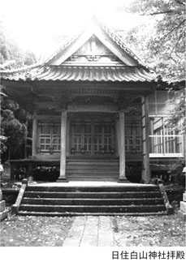
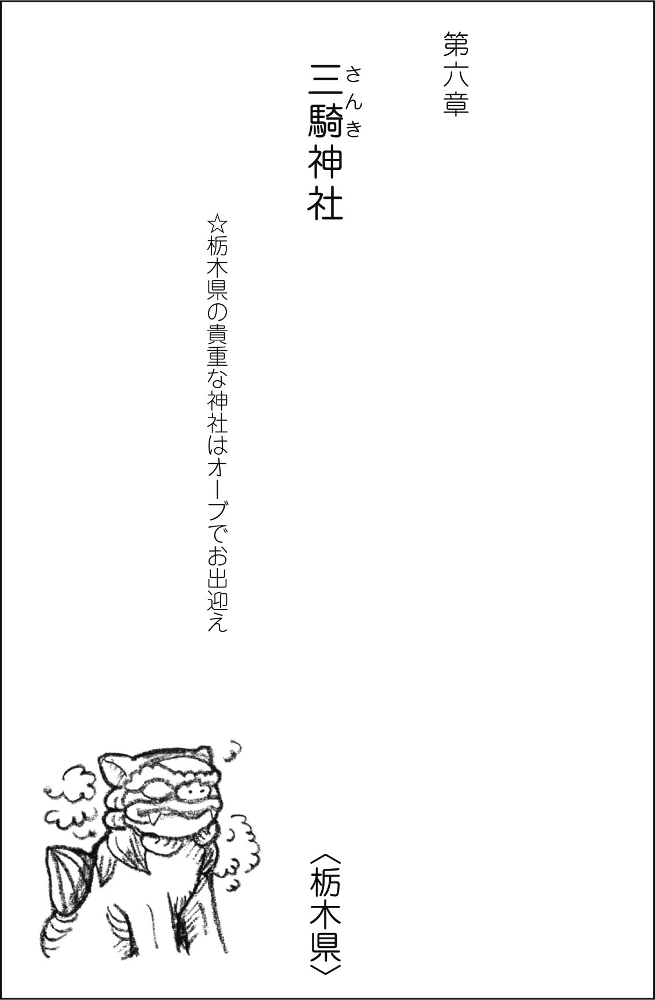
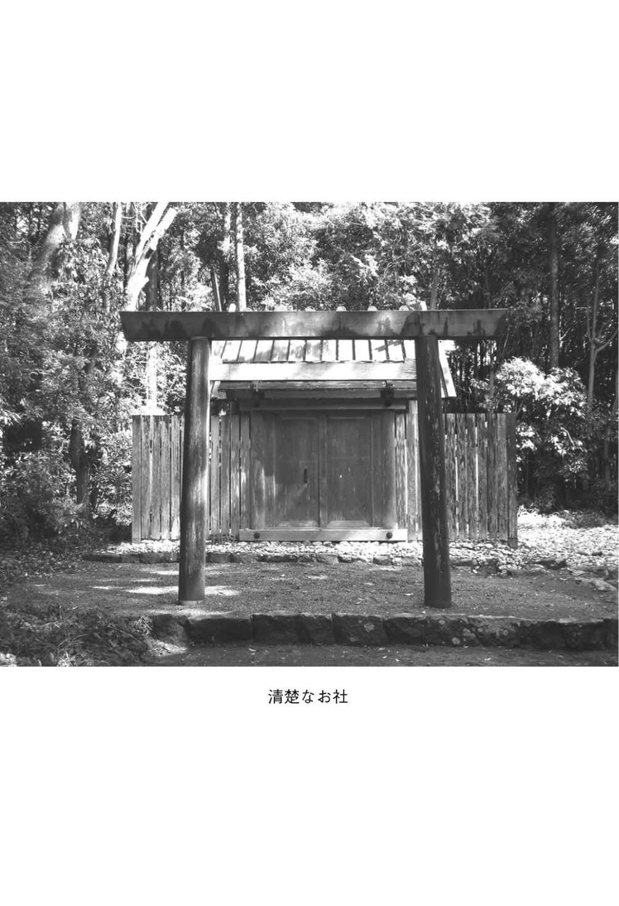
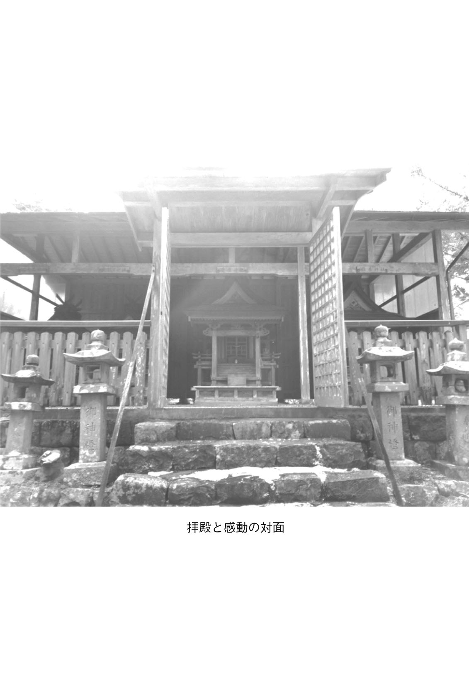

| あなたにも奇跡が起こる 瀬織津姫神社めぐり 姫旅しませんか? | |
| 山水 治夫 | |
| 株式会社ナチュラルスピリット (2017) | |

まずはじめに
瀬織津姫 とは
縄文からの偉大なる女神。後の大和政権に封印されたとも言われています。古事記、日本書紀には登場しません。封印されたと言っても名前でありエネルギーは消せません。封印された理由については、伊勢神宮に祀る天照大神を女神としたためなどいろんな説があります。私はこれまでの11 年で、授かった〝 瀬 織津姫の歌 〟とともに、全国四十七都道府県の瀬織津姫を祀る神社を、探し参拝する姫旅をしてきました。
姫旅 とは
姫旅とは私の造語で、全国の瀬織津姫を祀る神社を探し参拝する旅を言います。
私の思う奇跡
瀬織津姫を祀る神社へ行くと甘い香りが降ってくること、水平虹が現れること、羽根が物質化すること、甘露が降ってくること、人との出会いなど、実際に私が体験した奇跡は多岐にわたります。しかし私の思う真の奇跡とは......。
※瀬織津姫の歌
平成18 年４月18 日の未明午前３時に、夢の中で完成品の、作詞作曲編曲付きで流れてきて、起き楽譜に書き留めた歌。その11 月１日にシングルＣＤ『瀬織津姫』（ヤンズレーベル）をリリースする。＊本文に戻る
イラスト：岡坂陽子
まえがき
恋愛成就、商売繁盛、受験合格、家内安全、健康祈願......。神社では祈祷料を払い拝殿に入り、祝詞を上げてもらう方もいることでしょう。または、感謝のみの方も。神社参拝が老若男女の間でブームとなりうれしい限りですが、境内での参拝の仕方は千差万別と思います。
実は神社は、祓い浄めで始まり祓い浄めで終わる配置・構造
となっております。鳥居をくぐると手水舎
があり、水で手と口を浄めます。参道を進み拝殿に着くと、鈴があり音で浄めます。
このようなことを書く私も、瀬織津姫という女神を知る前までは、子供の頃から年に一回、初詣に行くか行かないかの人間でした。その頃は、手を合わせる時に毎年何か願いごとをしていたと思います。無意識に、神社では何か願いごとをするものと思っていたかもしれません。
そんな私が......
水
の神様
、滝の神様、祓い浄めの神様、龍神......。それのみならず宇宙の根源神である瀬織津姫の神社巡りをし始め、11
年になりました。
なぜ、一年中全国を駆け巡っているのか、こんなことをしているのか......。自問自答しても答えが見つからない私でした。ただただ、気がついたらそうしているとしか言えませんでした。夢中という言葉が当てはまるかもしれません。
多くの人から、そうやって回っていることによって瀬織津姫様を復活させているのだ。その地を浄めているのだ......などいろいろ言われました。そういったこともあるかもしれません。実際にいくつかの神社では、それを表すような現象がハッキリと現れました。しかし、それらは私にとっては二の次で、ただやりたいからやる、やったということで充分でした。この経験の中で私が得た一番ありがたいことは、感謝の気持ちを持ったことです。
平成18
年（２００６）４月18
日の未明午前３時に、『
瀬
織津姫』の歌が
夢の中に降りてきて、昨年（平成28
年）で丸10
年となったわけですが、すべてはこの歌が降りてきたことがスタートだと思います。
その間にＣＤ制作、姫旅、
瀬
織津姫シリーズの書
を出版、セミナー、トーク＆ピアノライブと全国を回り続けました。お陰様で多くの方々に、この無名だった女神を認知していただけるようになりました。しかし、私がこうして瀬織津姫を世に出す前には、
内
海邦彦さん
と
菊
池展明さん
が（いずれも故人となっておられます）基本を作ってくださっていました。その功績は今も輝いています。感謝申し上げます。
平成25
年10
月には、その時点で分かっていた全国の瀬織津姫の神社を参拝達成いたしました。もちろん、その後も少しずつ新たな情報をみなさんからいただき、参拝し続けております。別名で祀られる神社をも含めますと、参拝した神社は千七百社
ほどになります。しかし、別名で祀る神社はまだまだあるようです。
昨年、これまで巡った中でも特に印象深かった神社を書に記してみたいと思っていたところ、出版社より、正にそのような本を執筆してほしいとオファーがあり、受けることにしました。驚いたとともに、ありがたくまとめさせていただきました。
瀬織津姫を祀る神社は、中には有名で大きなお社もありますが、ほとんどが小さく知られていないお社
です。しかし、私はどちらかというとそういったお社の方が愛しく感じるものです。今にも朽ちて崩れてしまうようなものもありました。もちろん、探し出すまで何時間もかかったものが多々あります。一回の旅で見つけることができず、リベンジして......というのも二社ありました。そうして苦労して辿り着いたお社の方が思い出深く、愛しさを感じるものです。
今回、書に記すにあたり、二十社を選んだわけですが、これまでに参拝したどの神社も私にとって変わらぬ、大切な姫を祀る神社です。区別はありません。ですから、とりあえずこの二十社を選んだと思ってください。とりあえずという言葉を使いましたが、それぞれが飛び切り素晴らしいお社です。
この中でもいろんな奇跡がありました。瀬織津姫シリーズの読者の方はもうご存じですが、瀬織津姫を知ってから、瀬織津姫が絶えず自分を観てくれていると分かるようになり、そして絶えず自分と一緒にいる、自分の中にいる、自分も神なのだと解る
ようになってくる......。その間にいろんな体験をします。人との巡り合いのタイミングはもちろん、龍神雲、木霊
、
水
平虹
、カサブランカや薔薇など多種の甘い香りや墨汁の香り、白い羽根の物質化、
自
己神香する
、
一
人地震
、
香
りの霊的化学反応
、発光、透明化
など。極め付けは、ブッタ生誕時に降ったという甘露
も......。これらは同行者と同時体験もしています。また、自分だけの感覚ですが、降ってくる濃厚なカサブランカの香りの中で、
パ
ラレルワールド
を体感する時もあります。
なぜ、瀬織津姫はこのような数々の奇跡をくださるのか......。
そして真の奇跡とは何であるか。この書をガイドブックとし姫旅
を続けていくと、自ずと解ってくることでしょう。
では、型に捉われずいっしょに姫旅 しましょう。素の心が一番大切です。瀬織津姫がよろこんでくださるのは、〝そこ〟です。
山水 治夫
※水の神
人間も地球も約七割が水といいます。地球は水の惑星と言われています。宇宙飛行士の「地球は青かった」という歴史に残る言葉もありますね。ということはそれだけで、この女神が地球を代表する神ということが言えます。＊本文に戻る
※『瀬織津姫』の歌が
付録の最後に歌詞を載せております。＊本文に戻る
※瀬織津姫シリーズの書
２００８年に『瀬織津姫物語』を出版。その後『瀬織津姫秘話』『瀬織津姫愛歌
』（以上、評言社刊）。『瀬織津姫伝説』『瀬織津姫神話』『瀬織津姫愛舞
』『瀬織津姫意識（上・下）』『瀬織津姫次元』その他、『セオリツ姫・シ♭
～姫のオクターブ～』『ニギハヤヒ・シ♭ ～命
のオクターブ～』『５２８Hz
の真実』『倍音の真実 アドヴァイタ・ハーモニクス』（以上、ナチュラルスピリット刊）がある。＊本文に戻る
※内海邦彦さん
１９８６年に『わが悠遠の瀬織津比咩』（河出書房新社刊）を出版される。瀬織津姫で単独に記した最初の書。＊本文に戻る
※菊池展明さん
２０００年に『エミシの国の女神』、２００８年に『円空と瀬織津姫（上・下）』（以上、風琳堂刊）を出版される。＊本文に戻る
※水平虹
これは私の造語の一つで、環水平アークのこと。お陰様でかなり一般的にも定着してきていて、地方新聞にさえも使われるようになってきている。＊本文に戻る
※自己神香する
これも私の造語。自ら甘い香りを発すること。＊本文に戻る
※一人地震
実際には起こっていないのだが、本人には激しい揺れのみならずガタガタと音まで聴こえる。私がピアノ演奏する時も曲によって起こり、ライブではそれがリスナーに伝染する場合もある。次元移行時に起こるとも言われる。＊本文に戻る
※香りの霊的化学反応
いろんな場合があるが、私を見た人が突然に自己神香する。私が瀬織津姫意識になっている人と握手すると、その人の手から甘い香りが発せられ、しばらくすると反対の手までぐるりと両手両腕から香りが発するようになる。また、自動車で移動し降りる度に、神社や道の駅などの広い駐車場のスペースが、一瞬にしてカサブランカの香りで充満する。いつもというわけではないが、起こる時は三度連続して起こる。神社の場合、駐車場から参道～拝殿までの１００メートルほどの間のみ甘い香りで包まれる。左右に逸れると香りはしないといった驚愕の奇跡。参道が香りのドームとなる。＊本文に戻る
※パラレルワールド
過去・現在・未来が同時に存在すること。＊本文に戻る
目 次
宮司さんも初体験の甘い香りと日輪 の虹
第二章 日住白山 神社 〈秋田県〉
刮目 に値する木彫
第三章 桜松 神社 〈岩手県〉
姫旅の原点。龍神雲、木霊、甘い香り、カサブランカ、呉服、綿菓子......
第四章 大滝神社 〈福島県〉
由緒書き看板の瀬織津姫の文字を見るだけで......
全国の祓戸神社の中でも指折りの氣
第六章 三騎 神社 〈栃木県〉
栃木県の貴重な神社はオーブでお出迎え
都内にいぶし銀のお社がある
全国に五社しかない冠の社。白い羽根の物質化とＵＦＯ
第九章 瀧神社 〈岐阜県〉
墨汁の香りの発祥地
第十章 河濯山芳春寺 〈福井県〉
神仏習合の中に見る瀬織津姫
第十一章 蚊野 神社 〈三重県〉
清楚の極みのお社。巨大龍神雲のお出迎え
第十二章 菅原神社 〈奈良県〉
つり橋の先は耀 ひて
第十三章 廣田 神社 〈兵庫県〉
この旧官幣大社はよろこんで甘い香りをくださります
第十四章 東井 神社境内社 お瀧さん 〈鳥取県〉
拝殿の後ろにお宝発見
第十五章 早滝比咩 神社 〈岡山県〉
苦労を濃厚な香水の香りで労 うお社
第十六章 壇鏡 神社 〈島根県〉
朝鮮半島との繋がりを感じる地、神社
第十七章 山口大神宮 〈山口県〉
伊勢神宮分社で瀬織津姫の名を露わにするお社
第十八章 瀧宮神社 〈香川県〉
一礼した直後に香水の香りが......
第十九章 瀬川神社 〈佐賀県〉
楠も石祠も夫婦のお社
第二十章 祓戸神社 〈鹿児島県〉
貴重な祓戸神社の一つ、薩摩にあり
① 福島大神宮境内社 川濯
神社 〈北海道〉
② 日住白山
神社 〈秋田県〉
③ 桜松
神社 〈岩手県〉
④ 大滝神社 〈福島県〉
⑤ 彌彦
神社境外社 祓戸
神社 〈新潟県〉
⑥ 三騎
神社 〈栃木県〉
⑦ 人見稲荷神社・境内社 祓戸神社 〈東京都〉
⑧ 伊勢神明社境内社 瀬織津姫神社 〈静岡県〉
⑨ 瀧神社 〈岐阜県〉
⑩ 河濯山芳春寺
〈福井県〉
⑪ 蚊野
神社 〈三重県〉
⑫ 菅原神社 〈奈良県〉
⑬ 廣田
神社 〈兵庫県〉
⑭ 東井
神社境内社 お瀧さん 〈鳥取県〉
⑮ 早滝比咩
神社 〈岡山県〉
⑯ 壇鏡
神社 〈島根県〉
⑰ 山口大神宮 〈山口県〉
⑱ 瀧宮神社 〈香川県〉
⑲ 瀬川神社 〈佐賀県〉
⑳ 祓戸神社 〈鹿児島県〉
所在地・北海道松前郡福島町字福島２１９
例大祭・９月16 日
祭神・天照皇大御神
豊受大神
境内社 川濯神社 伊弉諾尊
伊弉冉尊
瀬織津姫命
由緒・創立年代不詳。本州からの渡海者が伊勢皇大神宮の大麻を奉じて「カムイナイ（アイヌ語）」という小沢に鎮座したと伝えられる。天正２年（１５７４）福島村常磐井家の遠祖常磐井治部大輔藤原武衡再建。更に慶安２年（１６４９）９月16 日村中にて再建。時に３代祠官笹井（常磐井）今宮藤原道治斎主となり、第９代松前藩主松前高広の命により福山神明社より古神鏡を奉遷し遷座祭を斎行。文化４年（１８０７）社殿焼失し、現在の「鏡山」の地に社殿を遷座。明治９年福島神明社を現社名に変更し、旧郷社に列せられる。
アクセス・ＪＲ木古内駅下車。函館バスに乗り、福島停留所下車徒歩約10 分。私の場合は函館空港でレンタカーを借り、国道２２８号線を西へ南へとひたすら80 キロほど走った。
＊ ＊ ＊
ここは平成21
年６月に参拝しました。『瀬織津姫愛歌』の時代です。北海道のほとんどの瀬織津姫を祀る神社は、道南
に集中しています（付録参照）。由緒にもあるように、松前藩の地域。この時の姫旅も大変苦労しました。その苦労がいい思い出になっているのですが......。ある神社では、境内末社に瀬織津姫が祀られているという情報でしたが、実際に向かうと、境内末社となっているところが実は境外末社で、その神社から数キロ離れたところにあるといったこともありました。もちろん、地元のおじいさんに訊くことを繰り返し、辿り着いたものです。
さて、話は戻りこの福島大神宮
のある福島町は、昭和の大横綱・千代の富士の出身地で、函館空港からレンタカーを借り、80
キロほど南下し福島町に近づいたころから、記念館の看板が目に着きました。その後、なんとかここはスムーズに見つけることができました。ちょうど宮司になられたばかりの若い宮司さんがいらして、とても親切に案内してくださいました。もちろん『瀬織津姫』のＣＤも奉納しました。
第一鳥居の前の由緒書き看板の中の末社、
川
濯神社
のところに瀬織津姫の文字を見つけた時は、感動しました。北海道で初めて見る瀬織津姫の御名。この頃は私もまだ知識が少なく、その時は気づかなかったのですが、実は、この地で川濯と名の付く神社があることは驚嘆することだったのです。この川濯という名は、福井県を中心とし、限られた地域特有の瀬織津姫の別名です。通常は、〝かわすそ〟と読みますが、ここは稀にある、〝かわそ〟でした。それが遠く離れたこの北の地で使われていることに今あらためて感動します。
ここでその御名を、当時はまだガラケーでしたが写メで撮ろうとしたら、「キウイ～」と音が鳴りました
。信じられないことですが、当時の私の携帯は、瀬織津姫の神社の写真を撮る時にだけ、たまに、こうして鳴いたのでした。宮司さんも「今のは何の音ですか？」と訊いてこられたほどでした。この音は読者＆リスナーの方、数人が聞いています。
すぐに川濯神社を案内してもらいました。赤い鳥居のお社でした。側には、イチイの古木。そして参道を挟んで乳房のようなコブがある「乳房ヒノキ」があります。
川濯神社を参拝してから、本殿へ向かったのですが、石段を上がらず、宮司さんの案内の元、裏の山道を上りながら向かいました。その途中で来たのです。甘い香りが......
。宮司さんに「甘い香りがしますでしょ？」と言うと、「はい、なんですかこれ?!
」と、自分のところの敷地内での初めての現象に目を見開いて驚いておられました。「私が瀬織津姫の神社を参拝すると、こういったことがよく起こるのですよ」「......」宮司さんは言葉に詰まっておられました。
上まで上がりきりました。拝殿の横で、宮司さんが、なぜあのようなことが起きるのかと訊いてこられました。その説明をしながら、甘い香り以外にも、木霊の声や、よく水平虹が現れたりしますと空を指さし見上げて説明しました。その一分後あたりに、説明が終わりふとまた空を見上げると、先ほどなかった日輪の虹が大きく鮮やかに出現
していたのです。宮司さんは、さらに驚き、「山水さんはなんなのですか?!
」と言われました。「いえ、瀬織津姫の祝福です」と答え、その日巡る予定の次の神社へと向かったのです。
境内には、さすがに相撲の土俵や、天手力男神 の大岩を持ち上げた像などがありました。
この像を見ると、健康祈願もよさそうです。
この高台から臨める風景は、海も見え爽やかでとても良かったです。付録に記しましたが、北海道には瀬織津姫を祀る神社は八社あります。北海道の姫旅もぜひ！
※川濯神社
北海道では、ここの他に函館市古川と同市根崎に川濯神社がある。しかしその二社の祭神は木花咲耶姫となっている。『セオリツ姫・シ♭
』ではこの女神も瀬織津姫の分霊としているが、その二社が当初から木花咲耶姫としていたのか、後に変更したのかは分からない。ただ、１６６４年に根崎の社殿で円空の仏像が発見されている。円空は瀬織津姫を意識して旅をし彫っていたという説がある。これらを元に考えると、やはりこの二社の当初の祭神は瀬織津姫であった可能性が高いと言えよう。＊本文に戻る
所在地・秋田県由利本荘市鮎瀬字石橋山１２４
例大祭・４月15 日
祭神・天照皇大神 伊邪那岐神 伊邪那美神 菊理姫神 瀬織津姫神 大彦命 天宇津女命
由緒・創立仁明天皇の御宇、嘉祥３庚申年であって、僧・円仁巡錫の時祠を樋脇白山の地に建て、伊邪那岐神・伊邪那美神・菊理姫神を奉祀し、神像一体を石に刻んで奉安したという。即ち白山妙理大権現と公称す。後、瀬織津姫神を合祭して、皇室の御尊栄と国家の安泰とを祈り奉る。
慶長16
年亥年楯岡豊前守神田５反歩を奉納したという。元和９壬申年六郷兵庫頭政乗領主となるや武運長久祈願社とする。享保16
亥年７月石橋山に遷座す。文政10
丁亥年社殿再建。文久元酉年１月26
日社殿神楽殿焼失。慶応２丙寅年社殿神楽殿再建。明治２己巳年白山神社と改称す。明治41
年より神社合祀により、村内各社を合祀し明治42
年日住神社も合祀して明治44
年11
月31
日秋田県知事の許可を得て、日住白山神社と改称す。明治45
年４月村社に列した。
アクセス・日本海東北自動車道、本荘インター下車７キロほど。由利本荘市の郊外にある鮎瀬石橋山に鎮座する。
＊ ＊ ＊
この神社は平成19 年９月に参拝しています。デビュー本『瀬織津姫物語』の時代。まだ古い時代のカーナビで、まだまだ現在のようにスムーズにはいかない時代でした。ましてやかなりの田舎。初めての村の人、おじいさんを見つけるも、言葉が通じず（話している方言が理解できない）泣きたくなったものでした。それでもがんばって訊き返しを繰り返している内に、なんとなく分かり驚いたことに、このおじいさんは、探していた日住白山神社の氏子の元総代だったのです。そしてこれからですが、以前、学者みたいな人が、あなた（私）と同じように、その神社を尋ねてきたよと言われたのです。当時、可能性があるのは菊池さんしかいません。ダブルで驚きよろこんだものでした。ただ、そのおじいさんがその後に教えてくれたことは、もう少し先へ行ってから誰かに訊いてくれというものでした。もう少しってどのくらいかと訊くと、車で５分くらいと言う。立ちくらみしそうでした。

それから時計を見ながら５分ほどしたところで、おばあさんを見つけ、訊くがまた言葉が通じない......。どうやら、自分は知らないが、もうすぐ、じいさんが帰ってくるから訊いてくれということでした。いつ帰ってくるか分からないおじいさんを待って訊くと、その道をまっすぐ行けばすぐにあるという返事でした。
ほどなく着いた神社は、素晴らしい氣を放ち 出迎えてくれました。ここまでの私の辿り着き物語を瀬織津姫が観ていて笑って待ってくれていたのかもしれません。
拝殿の上にある彫刻がまた素晴らしい。 私は日本一の木彫の町の生まれ（富山県、旧・井波町）で、叔父も彫刻師でした。欄間など、木彫を見る目は一般の方よりも、生まれながらにして身に付いていると思います。本当に素晴らしい木彫です。繊細で迫力があり、私がこれまで参拝した神社の中でも指折りと思います。刮目に値します（＊口絵参照） 。
一つ、特記しておきたいことがあります。この神社は由緒にあるように神社四社が合祀された歴史のある神社です。大日霊神社（天照皇大神）、日住神社（白山三神）、古四王神社（大彦命）、宮比神社（天宇津女命
）。社名を見て分かるように、現在、この神社は白山神社です。祭神も、
あ
る時から
の白山三神とも言える、伊邪那岐神、伊邪那美神、菊理姫神が祀られています。そこでです。ここで、残る瀬織津姫がどういう扱いかというと、元々のこの地の産土神
というのです。元々の地名も滝ノ沢。
円仁がこの地に白山三神を祀り神社を建て、その後、瀬織津姫を合祭したと由緒になっていますが、元々は、その地の神・瀬織津姫を祀る地に、白山神社ができて......が本当の歴史のようです。このように、祭神もそうですが、由緒もすべてが正しいとは限らないものです。
とにかく、この空間の氣の素晴らしさを感じていただきたいです。何度も訪れたい神社の一つです。目が点になる言葉に触れてみるのも、姫旅の醍醐味です♪
な～んて、田舎を馬鹿にしているのではなくて、私の富山の実家もかなり田舎でして、そこの北陸弁も、現地人同士の話す言葉はまず分からないと思います。多様性がいいですね。
※ある時から
白山神社には元々、菊理姫は祀られておらず、途中から祭神に加える白山神社が出てきた経緯があります。しかし、菊理姫とは瀬織津姫のことであるので正解です。『セオリツ姫・シ♭
』参照。＊本文に戻る
所在地・岩手県八幡平市高畑
例大祭・５月３日
祭神・瀬織津姫命
由緒・元和元年（１６１５）、二人の老夫婦（現宮司の村上家の祖先）が、水を汲みに川の上流まで来ると、桜の花が咲いている松の木を見つけました。不思議に思い上流まですすむと川底にきれいな姫が映って見え、そちらに進むと今度は滝が見えました。その滝を見ておじいさんは、荘厳な滝の力強さに不動明王の姿を、おばあさんは白糸の機を織る姫の姿を感じて、不動明王と瀬織津姫を祀ったということです（明治初めまでは桜松不動明王として尊崇されていた）。なお瀬織津姫を祀った社は、桜の花が咲いていた松の木にちなんで｢桜松神社｣と名付けられました。
アクセス・東北自動車道、安代 インターを降り、県道を右折します。踏切を越え、日来神宮 の山を眺めながら進むと、左手に大きな鳥居が迎えてくれる。
＊ ＊ ＊
この神社が私の姫旅の原点。初めての、瀬織津姫の神社です。時は平成18
年５月。当然『瀬織津姫物語』の時代です。御神体である不動の滝と呼ばれるその滝は、それはそれは美しく、しばし見惚れました。日本の滝百選に入っています。お陰様で今でこそ、瀬織津姫の神社として名が通ってきていますが、少し前までは、地元の人でも滝にしか意識を向けていない所でした。
日来神宮を見ながら進むと見えてくる、大鳥居を左折し踏切を渡ると、安比川の橋の右手にある黒い石碑（＊口絵参照）
が見えます。最初に行った時、そこでいったん車を止めて外に出ると突然、龍神雲が出迎えてくれた
のです。目も牙も角もはっきりと分かりました。
それから七時雨山
の中腹にある神社まで走っている間に窓を全開にし、できたばかりの瀬織津姫の歌の曲（まだ歌入れしてない状態のもの）を山に、自然に聴いてもらいながら上っていきました。鳥居を一礼し、くぐり、すぐ右手に流れている山水で手と口を浄め、拝殿へ向かいます。参道の両脇の杉がとてもいい......。〝一筋の氣〟というものを感じます
。そういえば、祭神も瀬織津姫の一柱です。１００メートル近く進むと右手に拝殿が見えてきます。
石段を上がり参拝をすませた直後、
「ココココキキキキココココ......ココココキキキキココココ......」
と杜
に響き渡った
のです。後にそれが木霊と分かりました。その数日後、同じ岩手県遠野市にある早池峯
神社を参拝した時も、同じ音で木霊が鳴き
驚嘆したのでした（＊口絵参照）
。この体験の後、全国の神社でも同様の体験をすることになったのです。
その８ヵ月後の翌19
年の１月。真冬の桜松を訪れた私は雪の中、滝に向かい参拝をしました。滝の一部も凍っています。すると、その直後に甘い香りが滝から降ってきたのです
。雪に囲まれた世界です。同伴者も驚嘆しました。今、思えばこの時も、ある次元のスタートだったような気がします。
当時はまだまだ瀬織津姫は知られていなくて、神道関係者や祝詞に興味がある人だけが、（大祓祝詞
に登場する）瀬織津姫の名を知っている時代でしたが、その中でも遠野の早池峯神社は知る人ぞ知る瀬織津姫を祀る神社として名が出ていました。しかし、この桜松神社は、ほとんど知られていませんでした。私はどちらも好きですが、私にとって初めての神社、この桜松神社の不動の滝の素晴らしさを、瀬織津姫の御名とともに、全国の人に知ってもらいたいと強く思いました。それで18
年の11
月１日にリリースした、『瀬織津姫』のシングルＣＤのジャケットの写真をこの不動の滝にしたのです。お陰様で、今では桜松神社も遠野の早池峯神社と、遜色ないくらいの知名度になってきたのではないかと感じております。
私の瀬織津姫シリーズを読んでいただいている読者の方はご存じでしょう。この神社には、もう10
回以上参拝しに訪れていて、数回を除いてすべて木霊、甘い香りやカサブランカの香り、極め付けは呉服の香り
（『瀬織津姫神話』参照）と、未曾有の体験をしている神社です。そういった意味では福井県の平泉寺白山神社と双璧
です。ちなみに、これはそうした現象が理由ではなく、氣がいいからという理由ですが、私の全国の神社のベスト３
に、この二社は入っています。やはり氣がいいということは何かあるのでしょう。その参拝する者と神社の領域の氣が霊的科学反応を起こすのです。
『瀬織津姫次元』の時になりますが、平成26 年９月に、『第７弾 山水治夫 瀬織津姫正式参拝シリーズ〝桜松神社〟』が開催されました。マックス五十人募集のところ、全国津々浦々から五十二人の瀬織津姫を愛する強者が集結しました。その五十二人と宮司夫妻が、またここで奇跡の体験をしたのです。いたる所で全員が濃い綿菓子（綿あめ）の甘い香りを体験 したのでした。幾度も降り注がれました。半数は未体験の方々でした。信じられないことが実際に起こり、みんなでそれを共有する。瀬織津姫大神の祝福を充分すぎるほどいただいた一日でした。
さて、この境内には、前記した手前の拝殿がまずあり、そこから御神体の滝まで１００メートルほど歩いて行くのですが、その滝の手前右上に不動堂があります。由緒の中の、おじいさんが祀ったということになっているのでしょう。参拝される時、どちらにも手を合わせていただきたいです。
不動の滝を参拝してからは朱色の橋を渡ると、川の下流の方向へ遊歩道が伸びており、そこから駐車場へ戻ることもできます。参拝シリーズの時は、その遊歩道でも何度も綿菓子の香りが来て、
みんなで歓喜しました。川の水からその香りが降ってくる
のです。吹いてくる
のです。ここは私の愛する神社と言ってもいいです。
こうしてこの桜松神社は、私が瀬織津姫を想い通ってから変わりました。桜松神社の次元の扉を開けた ことは間違いありません。ここだけでなく全国で何社もそのようになった神社があります。どうしてこのようなことが起こったのでしょうか。
答えは、
愛です。そうです、霊的化学反応とは愛です。愛は１秒間に地球を七周半します。
その正式参拝に参加された方からのメールを匿名で載せさせていただきます。
山水様
この度は、桜松神社を正式参拝することができ、本当にありがとうございました。綿菓子の甘い香りが降り、不動の滝も神々しく感動しました。また、岩手の美しい山と森の風景や、天の川まで見える星空を楽しむ事ができました。
今回の正式参拝で、何か一つの区切りがつき、ギアチェンジをした感じがしました。
どうもありがとうございました。
○○○○
岩手県は現在（平成29 年２月）の時点で、瀬織津姫を祀る神社数では、私が探し参拝した中で京都府とともに日本一位を誇る県です。面積が広いだけではなく、確かにこの姫を大切にしてくださっています。沿岸、内陸とそれぞれの姫神社があります。見つけるにも困難なお社もたくさんありますが、それを求めての姫旅もロマンです。
所在地・福島県双葉郡広野町大字上浅見川字大舟１
例大祭・４月８日
祭神・瀬織津姫命
由緒・（次ページの写真のように）永年５年４月、第70 代の後冷泉天皇の御代に創立され、毎年４月８日に例祭が行われます。
アクセス・常磐自動車道、広野インター下車３キロ。
＊ ＊ ＊
３１１の大震災に遭ったこの地ですが、この神社も私の記憶に鮮明に残っています。ここは社名からそうですが、瀬織津姫は〝滝神〟と認識させてくれるに充分なところです。
平成20
年11
月１日に向かいました。『瀬織津姫秘話』の時代。『瀬織津姫』のＣＤをリリースしてちょうど二年目の日です。大滝温泉旅館に車を駐めさせていただき、女将さんに神社までの道を訊いて向かったのでした。とても親切な方でした。もちろんＣＤを奉納しました。
阿武隈山地から東へ流れ、広野町を横切り太平洋にそそぐ浅見川にそれはあります。１００メートルほど道を上流に向かい歩くと、ガードレールの切れ目の〝大瀧遊歩道入口〟と書いてある観瀑場所に、川に下りて行く階段があります。しばらく下りて行くと二股に分かれますが、右に行くと神社が見えてきます。神社と言っても小さなお社。ところが、そのお社がとんでもなく私に感動を与えました。鬱蒼とした川辺の隙間に、こんなに丁寧に祀ってある......。石を積み上げて造られたお社。看板に姫の文字もこんなにしっかりと......。その文字を見るだけで涙が出そうになりました。隣には木の戸をつけた拝殿も造られていました。
参拝してから二股まで戻り、今度は川辺に下り大滝に参拝しました。これまた素晴らしい滝。もちろん瀬織津姫の場合、この滝が御神体です。
この書を記すにあたり、当時お世話になった旅館に連絡をしてみました。震災後、半年くらいは何もできなかったそうですが、その時から現在にいたるまで、復興の工事の人の為の専用宿となっているとのことです。まだまだ一般の客を受け入れるまでにはいたっていないとのこと。いつの日か、今度は客として宿泊し神社を参拝したいです。
そのお社ですが、地震により戸が壊れたそうです。例大祭はまだできないままとのこと。ただ、氏子の方々が自主的に掃除しているという。ありがたいことです。
ここで、この地に残る伝説を記しておきます。
浅見川の上流に奉られる大滝さまは女の神さま、河口近くの鹿島さまは男の神さまで夫婦の神さまだといわれています。昔、南山（上浅見川）の集落では、浅見川の水は絶対に飲まないことになっていました。これは、お姫さまの大滝さまが浅見川で髪を洗っていて、それが川に長く流れていることからだといわれています。
この大滝には、おこもりをする行屋ありました。兵隊に行くことになった男達が、この行屋で武運を祈り、何日もこもって水垢離 をとって出征したということです。川沿いの道からは、大滝の姿しか見ることができませんが、この辺りには小滝・松滝・夫婦滝・見えない滝（山の陰で）などがあるということです。
祭りももう少し詳しく。
花まつり（通称たんたんぺろぺろ）が行われる。これは、大滝神社（女の神様）と鹿島神社（男の神様）のお神輿が上浅見川字桜田のお旅所で出会い、町内を練り歩きながら、浅見川河口の浜で潮垢離 をとる浜下りの神事となる（熊野信仰に由来するとされる）。
鹿島の神とは、私に言わせると、すなわち饒速日命 です（『ニギハヤヒ・シ♭ 』参照）。福島の復興が早く進むことの願いを込め、この大滝神社を載せさせていただきました。
所在地・新潟県西蒲原郡弥彦村弥彦２８８７―２
例大祭・２月２日
祭神・天香山命
境外社 祓戸神社 瀬織津姫 速秋津姫
気吹戸主
速佐須良姫
由緒・彌彦神社は、新潟県西蒲原郡弥彦村弥彦にある神社。式内社、越後国一宮の一つ（新潟県は三社あり、この他は天津神社、居多神社）。正式には「いやひこ」と言うが、それ以外の地名などすべて「やひこ」と読むので一般には「やひこ」と呼ばれている。弥彦山の麓に鎮座し、『先代旧事本紀』の「天神本紀」に、饒速日尊の天孫降臨に従った三十二柱の一柱に数えられる天香山命を御祭神とし、古代より時の朝廷・将軍家、武将達の篤い信仰を集めた。明治45 年（１９１２）に大火により殆どが焼失したが、地元の熱意により大正５年（１９１６）に再建され、平成27 年（２０１５）には、再建・遷座より１００年を迎えた。
アクセス・ＪＲ弥彦線、弥彦駅より徒歩約15 分。
＊ ＊ ＊
新潟県では一番有名な神社かもしれません。ここにあるという祓戸神社を探し参拝したのは、『瀬織津姫愛歌』の頃、平成21
年のことでした。彌彦神社までは到着したものの、それからが意外と難航しました。自分の足で末社を探してもどこにもないので、境内にいる巫女、神職に訊いたところ誰も知らないと言うのです。ここに祓戸神社があるという情報を疑ったほどでした。
困った私は社務所を探し中に入り尋ねました。訊いた神職はあると言い、場所を教えてくださったのですが、わたしの理解力が足りなく何度訊き直してもはっきり分かりませんでした。聞いた記憶を元に歩きましたが、やはりみつかりません......。
境内を行ったり来たり、うろちょろしている私に声をかけてきた老人がいました。ここの氏子を長くやっていると話しかけてこられました。よろこんだ私は、この人なら知っていると思い祓戸神社を訊きましたがやはり知らないとのこと。「社務所の神職があると言うのだから、あるはずだね」と一緒に境内をもう一度探してくださったのですが、やはりないので
す。おじいさんは訊いてくるから待っていてと言い行きました。
かなり待ちました。やっと戻って来たおじいさんが、「ありましたよ。一度外に出て右にまっすぐいけば左手にあるそうです」と......。助かりました。ありがたかったです。
で、結局、広い境内の外に出て右に歩いて行くとありました。
驚きました......。
その祓戸神社の氣が、とてもとても素晴らしいものだった のです。文字通り空気が違っていました。鳥居からまっすぐ先に見える小さな拝殿までの参道を見ているだけで浄められるという感じがしました......。こういったところに来ると、やはり神域 ってあるのだなと分かります。
そういった物語があったこのお社。私が昨年（平成28
年）の４月に行いました、トーク＆ライブ、『シリウス☆次元ツアーｉｎ長岡（新潟）』の翌日に希望者で姫旅をしたのですが、真っ先にみなさんをお連れしたのがここでした。
やはりみなさん、この〝氣〟に感動されていました。ここは以前に『瀬織津姫愛歌』で紹介したこともありますが、この姫旅に参加したみなさんが、そのような感動があると、それぞれＳＮＳにその後、「良かった！ 素晴らしかった！」とアップしてくださいます。そうした積み重ねで、この彌彦神社の境外末社のこのお社もまた外にしっかりと認知されるようになってくるのです。こうしてみなさんに姫の神社を紹介するのも私の役目の一つでもあると思い、継続は力なり＆愛であるとやっていくだけです。
全国のすべての祓戸神社も参拝した私が、一押しで推薦するお社です。ぜひ一度、気を浄めて向かい、氣を感じてください。浄められる と思います。
ふと訪れる神社でも、末社を意識してください。意外と祓戸神社が（又は、別名を祀る末社も）あるかもしれませんよ。そうして見つけた姫神社もたくさんあります。

所在地・栃木県佐野市船越町２８3８
例大祭・不明
祭神・天児屋根命 配祀神 瀬織津姫
由緒・天慶５年（９４２）に藤原秀郷公によって創建され、天正18 年（１５９０）に船越太郎が再建。明治40 年ころ、滝尾神社を合祀した歴史があり、その祭神が瀬織津姫だったのではないかと推測される。
アクセス・北関東自動車道、佐野田沼インター下車８キロ。
＊ ＊ ＊
この社は、平成18 年11 月に参拝しています。『瀬織津姫』のＣＤができた直後でした。もちろん『瀬織津姫物語』の時代。この年、三回目の東北ツアーの帰りに栃木県で下車し、探しました。
栃木県には瀬織津姫という本名で祀られている神社は現在のところ二社しか確認されていません。この三騎神社の他もう一社は、岩舟町曲ケ島にある荷渡神社です。このニワタリという名も、実は奥深いものがあり、この北関東から東北にかけて、瀬織津姫のいわゆる隠語的な意味合いも持っているのです。この書ではそこまでは書きませんので、興味のある方は瀬織津姫シリーズを参照してください。
話は戻って、もちろん二社と少ないからといって差別はしません。なおさら貴重ですね。ゼロの県もありますが（熊本県、沖縄県）、まだ分かっていないだけの可能性もありますし、別名ではどこの県もたくさんあります。熊本県では別名だけで姫旅をしたくらいです。別名は、朝廷からの圧力で変えさせられたものが多いので、瀬織津姫は瀬織津姫です。また沖縄県の琉球沖縄八社はほとんど熊野系の神社で、瀬織津姫の名はありません。実は、突き詰めれば熊野権現も瀬織津姫なのですが、これもこの書では二ワタリ同様そこまでは突き止めません。しかし、沖縄には数え切れないほどの水の聖地があります。地元の方々のご協力でたくさん参拝しました（『瀬織津姫伝説』参照）。
さて、祭神についてですが、主祭神の天児屋根命は、藤原氏（中臣氏）の祖先神ですが、天岩戸に天照大神が籠もった時、岩戸の前で祝詞を唱え、天照大神を岩の外に出した神です。その後、奈良県の春日大社の祭神の一柱となっていますが、神道の中で一番長く重要と言われる、大祓祝詞を作ったのが、この中臣家と言われています。瀬織津姫は、この祝詞とホツマツタヱという古文書の中で唯一登場するのですが、面白い組み合わせですね。
拝殿は入母屋造り。切妻破風のある拝殿は堂々としてなかなか立派でした。四面にはいろんな彫刻もありこれまた色彩鮮やか。鳥居もですが、朱色に飾られ鮮やかです。写真の拝殿の二本の柱の左上にある白い球は、オーブです
。オーブが写ったからではありませんが、この境内は、何かいるな......と思わせる氣があります
。
また、これは同じ北関東の群馬県などと共通の特徴ですが、境内に多くの石祀
があります。石仏も、「二荒山」と「高尾山」と刻された碑が左右に並んで配置されていました。瀬織津姫を祀る神社は、よく近くに川が流れていますが、こちらも南側に旗川が流れています。
栃木県といえば、日光東照宮など有名なところはたくさんありますが、ぜひ、この瀬織津姫の神社にもご参拝ください。ちなみに、東照宮の境外の右奥に瀬織津姫の別名の罔象女神 を祀る神社、滝尾高徳水神社があります。なかなかいいお社です（『瀬織津姫愛舞』参照）。
所在地・東京都府中市若松町５―７―６
例大祭・９月第３週頃
祭神・倉稲魂命
瀬織津比咩命 天下春命
境内社 祓戸神社 瀬織津姫 速秋津姫 気吹戸主 速佐須良姫
由緒・武蔵国造兄武比命が祀った神社で、六所宮客来三所之神と称される（六所宮＝大国魂神社にあつまる神輿のうち三ノ宮大宮氷川神社の御旅所）。武蔵七党の人見一族が来住していた地ともいわれている。寛喜３年（１２３１）に武藤左衛門尉資頼が神殿奉行として三所之宮を造営し代々神事に携わったといわれる。慶長２年（１５９７）に三社を合祀して稲荷社と称するようになった。拝殿は元治２年（１８６５）の造営であったが昭和56 年に不慮の出火により焼失。昭和58 年再建。
アクセス・京王線多磨霊園駅下車（各駅停車のみ停車）。新宿方向出口改札を出て、踏切の左手を進み、最初の信号を左折。ひたすら真っ直ぐ20 分ほど歩く。

＊ ＊ ＊
付録を参照願いますが、東京都は意外と瀬織津姫を祀る神社が多いのです。現在のところ二十社確認されています（その多くは祓戸神社としてですが）。これは関東では断トツの数です。それで、よく質問されます。その東京でお薦めの瀬織津姫の神社は？と。たいがい一番か二番に答えるのがこのお社。まず、なんともいえない氣があります 。いつ参拝してもそれは変わりません。
新宿から出ている京王線に乗り、多磨霊園駅下車。そこから20 分ほど歩きますが、いい運動になります。ウォーキングしましょう。私はこれまで十回近く参拝させていただいております。駅からすぐの信号を左折し、ほぼ真っ直ぐな道を行き、あるところで小道を左折します（その前にこんもりとした杜が見えてきます）。すると鳥居が右手に見えます。そんなに大きな鳥居ではありません。一礼しくぐり、小竹に挟まれた石段を上がります。すると正面に威厳を持った拝殿が......。なんとも言えません。ここ、大好きです。人間・神社は、家柄や格式ではないのだなと教えてくれるような気がします。
この社はめずらしく、本殿にも末社の祓戸神社（右奥にある）にも、つまり２ヵ所に瀬織津姫が祀られています。本当にありがたいです。また拝殿左手前には浅間山遥拝所があり、木花咲耶姫が祀られています。それも私にとってはうれしいのです。
祭神の中の天下春命ですが、府中市と多摩市の武蔵の一之宮である両方の小野神社に祀られる神です（もちろん、どちらも瀬織津姫を祀る神社）。この謎の神は、饒速日命の部下としても名を馳せている神でして、天照大神の岩戸物語の際、プロデューサーをした天意八思兼命
の息子です（次男）。この神は私の勘ですが、長野経由で埼玉県秩父地域も治めた神。それから武蔵の國へ来たようです。饒速日命の部下としてでもありますが、東京で瀬織津姫といっしょに祀られることで、結構有名になりましたね（私が騒いだからでしょうか？）。
あと、瀬織津姫との関係は？となると難しいです。単なる小野一族が管轄していた地の神社で、いっしょに祀ったとも考えられますが（ＣＤを奉納した氏子の方はそう言っておられました）、饒速日命に関係する命なので、何かあるのかとつい思ってしまいます。
また、この神社のある人見地区は、府中市の大國魂神社の
く
らやみ祭
の重要な
経
由地点
となっております。多少歩きますが、上京の際に、ぜひ訪れていただきたいお薦めの一社です。
東京都の姫旅は数が多いので、数日かかります。上京の度に少しずつ回ってみてください。
※くらやみ祭
主に５月３日～６日にかけて東京都府中市の大國魂神社（武蔵国の国府である当地の総社）で行われる例大祭である。武蔵国の「国府祭」を起源としており、東京都指定無形民俗文化財となっている。（ウィキペディアより）＊本文に戻る
※経由地点
この街道は国府の府中から旧人見村を経て大宮（現・さいたま市）へ行くもので、大宮街道、野州街道とも言われています。昔は人見街道を通って大宮の氷川神社からのお神輿が人見の御旅所まで来て、六所宮のくらやみ祭に参加しました。＊本文に戻る
所在地・静岡県静岡市駿河区小鹿８８６
例大祭・10 月17 日
祭神・天照皇大御神
配祀神 伊邪那美命 速玉男命
黄泉津事解男命
境内社 瀬織津姫神社 瀬織津姫命
由緒・安土桃山時代の天正18
年（１５９０）に朝廷にお願いして、文禄元年（１５９２）に神祇官大中臣の家より神事を賜って創建されました。天照皇大御神は、伊勢神宮（内宮）に奉斎する大神で、人間の生命の根示としての日の神であり、又皇室の御祖神であって、国民の総氏神として崇められている。配祀の神々は、堀の内にあった長澤神社の御祭神で熊野の神々であり、明治40
年に当社に合祀。
境内の御神木は、県指定天然記念物の楠
の巨樹。戦国時代の元亀・天正年間にはすでに巨木であったと伝えられ、樹齢は推定千数百年。樹高28
メートル、目通り周囲11
・４メートル、根際15
・03
メートル、枝張り（東）27
メートル。
アクセス・ＪＲ東海道本線、東静岡駅から南方面に１・５キロほど。東名自動車道路の場合、静岡インター下車。東京方面に５キロほど戻る。小鹿公園の隣。
＊ ＊ ＊
平成21 年10 月に参拝しております。ここも本当にうれしい神社でした。『瀬織津姫伝説』を読んだ方は分かりますが、この神社へ向かう直前に、同じ駿河区の弥勒 という住所にある水神社（瀬織津姫）を参拝し、この伊勢神明社へとカーナビを設定している時でした。目の前のフロントガラスの手前に、ドゥトゥーンと音を立てて白い羽が突如、現れたのです 。窓は閉め切っていました（同じ時刻の頃、祓戸神社のある三嶋大社上空にてＵＦＯを目撃しました ）。
そうした奇跡の後に向かった神社。それも、「瀬織津姫神社」へ。冠に瀬織津姫と付く神社は、全国で五社しかありません。
宮城県気仙沼市 瀬織津姫神社 （＊口絵参照：額） （＊口絵参照：拝殿）
石川県金沢市 瀬織津姫社
静岡県下田市 伊古奈比咩命神社境内社
二十六社神社内 瀬織津姫神社
宮崎県西臼杵郡高千穂町 瀬織津姫社
そしてこの章の、伊勢神明社境内社 瀬織津姫神社 です。
静岡県も瀬織津姫の神社が多い県ですが、二社もあるので本当にありがたい県。しかも、静岡市清水区には瀬織戸神社もあります。
神社に着いた時、やはり大楠に目がいきました。立派です。そしてここもとても暖かい氣を感じた お社でした。私は瀬織津姫の神社ならば、どれだけ朽ちていようが、掃除が行きわたってなかろうが、草ぼうぼうであろうが、一切、不満の気持ちが湧かない人なのですが、やはりこのように良い氣が溢れている境内は、気持ちがいいし、やはり神域というものを感じざるを得ないもの。神職、氏子の方々の日頃の行いの賜物ですね。ここにもＣＤを宮司さん宅に奉納しましたが、奥様が丁寧に応対してくださりました。
ここで面白い話を......。祓戸神社、祓戸大神、 祓 戸四神 の歴史を遡っていくと、実は瀬織津姫一柱になっていきます。となりますと、全国の祓戸神社は、本来は瀬織津姫神社という名であっておかしくないわけです。全国にまた一つ、また一つと、瀬織津姫神社という名のお社が増えていくことを願います。
もう一つ。日本の神様で、オオカミと付くのは二つのみです。天照大神とこの祓戸大神。その祓戸大神が実は瀬織津姫一神となると、また面白いことが分かります。それは伊勢神宮内宮の正宮とNo .２の荒祭宮です。そうです。天照大神と瀬織津姫となります。うまくできていると言いますか、真実が見えてきそうではありませんか？ 天照大神には饒速日命がお似合いですね。そして、私がよく記しております、瀬織津姫大神。これが正しいようですね。
静岡県は瀬織津姫を祀る神社の数の多い県で、静岡市の葵区や、川本町にも密集しております。それぞれの地域を巡るだけで１日かかるくらいです。じっくりと味わえる県です。
※祓戸四神
祓い浄めの神。瀬織津姫、速秋津姫 、気吹戸主 、速佐須良姫 の四神。気吹戸主のみ男神。＊本文に戻る
所在地・岐阜県美濃市乙狩２２１８
例大祭・不明
祭神・瀬織津比咩尊 水園象女之尊 八百万神
由緒・天歴年間（10 世紀中頃）、この地に妖怪〝さるとらへび〟が住み付き、村人に危害を加えているのを聞いた朝廷が、藤原高光をこの地に遣わし、妖怪を退治させたという。この時、高賀山大本神宮大行事神社（現・高賀神社）を再建し、七昼夜妖怪退治の祈願をしたという。高光が妖怪を追い求めて高賀から乙狩谷に来た時、山全体が黒雲に包まれて進めなくなってしまった。そのとき矢を黒雲の中に放つと雲が無くなり、やがて滝にたどり着く。この滝の近くの洞が妖怪の棲家であった。高光はこの滝で野宿をすると、滝の神々が妖怪を追い払う夢を見る。そこで滝のほとりに祠を建立したのが、瀧神社の始まりという。
アクセス・東海北陸自動車道、美濃インター下車。94 号線を西に５キロほど走り、８キロ北上し、板取川にぶつかる。左折し、橋を渡り81 号線を１・５キロ行き乙狩川を北上すると４キロほどで着く。
＊ ＊ ＊
ここも好きな神社で且つ、大変な印象的な体験をしたところです。初めて参拝したのは、平成23
年９月のことです。『瀬織津姫神話』の頃。その後、計三回参拝しております。たまにありますが、瀬織津姫と水園象女之尊
（ミズハノメ）をダブルで祀る神社です。
丘の上にある神社の下を流れる川にある〝権現の瀧〟（＊口絵参照）
もなんとも言えず美しく、この地の出身の円空もしみじみ眺め、愛でていただろうと想像に難くありません。実際に和歌も残しています。
「文（あや）なれや 予（わが）ことなさて 滝の宮 心の声を 神かそと念」
ここは、高賀山を主峰とした山（瓢 ケ岳、今渕ケ岳、片知山など）の山麓にあり、高賀山を囲む六つの神社、高賀六社のひとつで、六社巡りといい、尾根伝いに一日で歩いて巡る苦行が存在したそうです。確かに修行の場が似合うというか、そういった匂いがする地域です。
大変な体験をしたというのは、何も遭難しそうになったというのではなく、今では当たり前でもありませんが、たまに降ってくる〝墨汁の香り
〟が来たところなのです。
それは、二回目に参拝に訪れた時になります。由緒にも出てきますが、その時はここに来る直前に高賀六社の内の円空記念館もある、高賀神社へ仲間と参拝しました。この神社は国之常立尊
はじめ二十三柱もの神を祀るお社なのです。瀬織津姫を祀ってはいないのですが、よく調べると最初は十一面観音を祀ったという謂れがあるのです。十一面観音とは瀬織津姫のことですので（聖観音も）、その辺も意識して、参拝していましたところ、仲間が突然「炭！ 炭！」って叫んだのです。（スミってなんだろう？）とキョトンとしていた私も、しばらくしたら叫びました。「墨汁だ！ 墨汁の香り！」と
。
そんなこんなで、この瀧神社へ権現の瀧を参拝してから到着したわけです。ここは正真正銘の瀬織津姫を祀る神社です。参拝した瞬間でした。
「あっ！ 墨汁の香り！ また！」
叫んだのは私でした。二社連続で生涯初めての墨汁。そう、書道をする時の墨汁のそのものの香りが降ってきたのでした。仲間四～五人も体験しておりますので、これは確かなことです。
その後、幾度となく降り注がれた墨汁の香りですが、『瀬織津姫意識』の時代に、愛知県の円空仏で有名な荒子観音寺にて、歴史に残るような濃厚な墨汁の香りが降って来て、円空は饒速日命の分霊なのだと悟ったわけでした。そのきっかけとなる神社だったのです（『ニギハヤヒ・シ♭
』参照）。
瀬織津姫はそれを私に教えてくれたわけですが、なぜ教えてくれたのか......。やはり饒速日命を愛しているからではないでしょうか。貴重な神社です。
岐阜県では、「栗きんとん」でも有名な八百津町に瀬織津姫を祀る神社が固まってあります。すべてが川神神社です。この川神は〝川上〟のことでもあるでしょう。川上神イコール瀬織津姫ですので。

所在地・福井県越前市高瀬２―５―15
例大祭・７月30 日～８月１日
祭神（御本尊）・河濯四光尊天 大日如来
由緒・ 河濯四光尊天を御本尊に祀る臨済宗大徳寺派の寺院。古く河濯権現として呼ばれて、広く親しまれている。昔は近くに流れる川で身を清めてからお参りをしたことから「河濯」、通称「かわっさん」と呼ばれ、安産・病気快癒にご利益があるとされる。境内には県内最古の俳聖松尾芭蕉の色紙塚や求道の人宮道安の歌碑がある。
アクセス・ＪＲ北陸本線、武生駅から徒歩約15 分。北陸自動車道、武生インターから約10 分。ＪＲ武生駅より市営バスに乗り、鶴沢町停留所下車徒歩約１分。武生中央公園、中央図書館の前。
＊ ＊ ＊
平成25
年８月に参拝しました。私の書では初登場です。ここは大変貴重な神社というか寺です。越前は福井県に瀬織津姫という本名で祀る神社は二社のみですが、第一章でも出てきました河濯（川濯）は、この福井を中心とした地方独特の瀬織津姫の別名です。高瀬という住所にあるのも気に入りました。高瀬神とは瀬織津姫ですから。
元々河濯神社であったのが、神仏習合で、日本の神とインドから中国経由で入って来た仏教が一つになり、その後また分けることになり......と、お上に翻弄された我が国ですが、そうした経緯の中でも瀬織津姫がしっかりとお祀りされております（ちなみに、多くは〝かわすそ〟と読みますが、第一章の福島大神宮と同様に、ここも、〝かわそ〟です）。
その分かれる時に、こちらは寺となり芳春寺になったわけですが、河濯大権現である瀬織津姫を残すために、河濯山を頭に付けております。
神仏習合と瀬織津姫の話は尽きません。弁財天、十一面観音、聖観音、不動明王......。そして白山神も関連してきますが、これらは瀬織津姫シリーズ、『セオリツ姫・シ♭ 』『ニギハヤヒ・シ♭ 』を参照願います。
さて、ご本尊の河濯四光尊天。どうしてもこの四という文字に目が行きます。祓戸四神ではないかと......。調べたところ四光尊天とは、 底筒男命 、中筒男命 、表筒男命 、そして瀬織津姫（勢尾律姫と表記） となっておりました。先の三柱はいわゆる住吉三神で、海の航海の安全を守る宗像三女神の男版です。ですので、祓戸四神ではありませんでした。
しかし、関連がまったくないかと言えば、そうでもないと思います。祓戸四神を意識してないとも限りません。だいたいが、河なのに海の三男神を持ってくるのは不自然です。
また、こういった考え方もできます。祓戸四神の、残りの速秋津神は河口の神ですし、気吹戸主も海の底へ罪穢れを持って行き......という大祓祝詞のストーリーです。速佐須良姫は黄泉
の國で......ですが、こうして考えると瀬織津姫以外は祓戸の神々も海に結構関係しております（黄泉ももしかして、海のことかもしれません）。福井県ではこの芳春寺以外にも、大野市に仏生寺（黒谷観音）などがあり、河濯大権現も祀っております。この河濯という御名。独自の発生なのか、はたまた瀬織津姫の名を消そうとした朝廷に対する策だったのか分かりませんが、敬意を表したいと思います。
家族で越前ガニを食べる旅をしながらの参拝も、なかなか乙な姫旅と思います。寺社ともに巡ってみてください。私は『瀬織津姫意識』で、〝 寺隠 〟という言葉を使いましたが（私の造語）、寺に隠れている姫も多くあるのです。
※底筒男命、中筒男命、表筒男命、そして瀬織津姫（勢尾律姫）
河濯山芳春寺では、表筒男命をご本尊「大日如来」、中筒男命を「釈迦牟尼如来」、底筒男命を「阿弥陀如来」、瀬織津姫（勢尾律姫）を弁財天女のご化身として奉っている。弁財天は瀬織津姫と明記してあるところがうれしい。本来はこうなのだが、全国的には市杵嶋姫 となっているものが圧倒的に多い。＊本文に戻る
所在地・三重県度会郡玉城町蚊野字里中１８０７
例大祭・祈年祭・月次祭（６月と12 月）・神嘗祭・新嘗祭と臨時祭の折には神職が社前にて祭祀を行う。歳旦祭・元始祭・建国記念祭・天長祭・風日祈祭（５月と８月）は内宮の五丈殿で遥祀を行う。
祭神・瀬織津姫命
由緒・蚊野神社は内宮摂社であり、鏡を神体とする。「かなもりさん」の名で親しまれる。中川経雅は『大神宮儀式解』で「かなもり」を「蚊野森」の転訛であるとし、社名は鎮座地名に由来すると解説している。祭神は大神御蔭川神 。鎮座地の蚊野地区を流れる外城田川の支流の川の神で、地域の開拓神とされる。蚊野神社と同じ内宮摂社の御船神社でも同じ神を祀る。『神名帳考証』は祭神を瀬織津姫命とし、大神御蔭川神の名を「川に臨んで罪を祓い清浄に至るのは天照大神の御霊」と解釈した。
アクセス・ＪＲ参宮線、外城田 駅下車（伊勢市駅から４駅目）。無人駅で、降りる時に進行方向にいる乗務員に切符を渡す。伊勢方面に歩き、三本目の道を（一本目は細い）右折し、１・５キロほど行くと杜が見える。20 分ほどの道のり。
＊ ＊ ＊
ここは一度しか参拝していませんが、大変印象に残っています。平成20 年３月、『瀬織津姫秘話』の時代。子供といっしょに伊勢神宮参拝の翌日に向かったのです。その伊勢神宮内宮での驚嘆奇跡体験・カサブランカ編 は、秘話を読んでいただくとして、話を進ませていただきます。
電車での旅でした。ＪＲ参宮線外城田駅で降ります。無人駅でした。出口と反対側の風景は未だに目に焼き付いております。ただ木々があるだけなのですが、その色彩は絵画の芸術作品を観ているようで、自然の威厳を感じての下車でした。あれは３月の季節だけの風景なのでしょう。
そこから、あらかじめプリントしてきた地図を見ながら歩きました。伊勢方面に真っ直ぐ戻って、右折してまた、ただただ真っ直ぐ歩いていました。すると遭遇したこともないような巨大な龍神雲が強風の上空に横たわっていました
。はっきりと分かるお頭付きです。それを子供と見上げながら歩き続けること20
分。
ありました。四角い杜に囲まれたお社。周りには甘夏みかんの樹もありました。しばらく入口が分からず、うろちょろしましたが、子供が見つけてくれました。かなり小さな入口で、私が通り過ぎていたのです。もっと大きな門を想像していたのでした。山茶花
の朱い花びらが石段を飾ってくれていました。

数段の石段を上がると、そこからの風景は小さな伊勢神宮
......って感じ......。小さな驚き。とても清楚です。上がったばかりのところの右側に、ホウキと塵取りが置いてありました。普段からの手入れを感じました。
少しカーブした細い参道を進みます。突き当たりに見えます。お社も伊勢の感じというのか、白木の鳥居に拝殿。この旅は、子供に私がやり始めた神社参拝を教えるといったものだったのですが、いやいや、当時は私自身もまだ初心者で、学ぶことばかりの連続の日々でした（現在もです）。
由緒の、「川に臨んで罪を祓い清浄に至るのは天照大神の御霊」は、伊勢の内宮は荒祭宮の祭神、天照坐皇大御神荒御魂
を彷彿させますね。
これはとても重要なことで、説の一つに天照大神は男神であるとするものがありますが、もしかして、記紀に記されているように、実際に女神であり、すなわちどちらも（正宮も荒祭宮も）瀬織津姫であるということを孕
んでいます（『瀬織津姫意識』参照）。
またいつか、ゆっくりと電車の姫旅をし、このお社にも再び手を合わせにと思ひます。伊勢の地はやはり何か違います。
所在地・奈良県吉野郡十津川村大字上湯川２０９
例大祭・不明
祭神・菅原道真 瀬織津姫 磐長姫命 素戔男尊
由緒・不明。明治24 年にできた神社明細帳に、第四一号菅原神社へ合併及び社殿新築之件吉野郡十津川村古谷川神社。とあるので、菅原神社に近くの集落の神社が合祀されその中に瀬織津姫を祀っていた神社があったと考えられる。
アクセス・これを書くのは大変難しい。記憶を辿り記してみる。十津川村温泉街から熊野に向かい南下する。バイパス１６８号と４２５号の交わる信号を４２５号に入り７００メートルほど行き、上湯川、龍神村方面の道を左折する。それからひたすら和歌山県境近くまで上湯川沿いの細い道を走る。下出谷、上湯、小原、出谷、小壁、大桧曾と。そして上湯川に入り、峠を過ぎ、下って最初の道を左折し坂を下りて行く。その辺で村の人を見つけて訊いてほしい。
＊ ＊ ＊
この神社は、まえがきに記した、リベンジして見つけることができたという二社の内の一社です。もうなくなっている神社かもしれないと思いながらも諦めきれずに、十津川温泉に宿泊し、どっしりと構え再チャレンジしました。それほど中途半端な気持ちでは見つけられないと思ったからです。新大阪駅でレンタカーを借り、一路南下し十津川村へ。この村には有名な玉置神社がありますが、瀬織津姫の神社も二社あり、もう一社は大将軍神社といいます。そこも辿り着くまでが大変は大変でしたが、地元の人に訊いて訊いての繰り返しで、渓流に沿って上がり、なんとか見つけ参拝できました。そこもかなりの山奥の渓流沿いにある小さなお社でした（『瀬織津姫秘話』参照）。
以前は、平成24
年１月25
日という冬に、雪の中、遭難しそうになりながらの姫旅でした。『瀬織津姫愛舞』の物語ですが、その時は雪の中の渓流に立ち、ただただ水の流れを見つめている私でした。
さて、再チャレンジの旅ですが、今回は、平成27
年９月です。３年半の時が経っていました。その川を越え、その先の集落にあるだろうと車を走らせました。なかなか人の住んでない地域です。昨今、テレビでもこの地域は集落の消滅がテーマで取り上げられています。
１日に何便あるのだろうか？と思うようなバス停の近くに、一軒、二軒と家やお店があります。そこで神社を訊いてもみなさん知りません。それには慣れっ子なので、さらに進み次のバス停の前にあった家で訊くと、少し情報を得られました。また進んで、ここだろうかという道を左折し、下って行くと違う筋の川に出合いました。そこから車止め（自然の駐車場）まで進み、そこからは徒歩で川沿いに上がります。熊が出ないかと、臆病な私は「入らせていただきま～す！」と山の神、川（水）の神、熊さんに挨拶をして進みます。それでも不安で、何度も拍手や、「お～～い！」と大声を出して上がります。十分ほどして何にもないので、また声を出しながらの下山。
車に乗って、また元の上の道に出て進みます。すると看板があり、「上湯川きのこ生産組合」の文字と矢印が見えたので、その道に入って行きました。組合の建物に、一人おじさんがいましたが、その人も、そんな神社は知らないけれど、もう少し上がると一軒、家があって、そこのおばあさんなら知っているかもしれないと言いました。これも慣れっ子です。その家をなんとか見つけ、おばあさんに訊くと......、知っていました。菅原神社を！
こうして、また来た道を戻り合流地点（上湯川きのこ生産組合の看板）をさらに進んで、峠まで辿り着き、下ってから最初の道を左折し、見えてくるだろう集落へと向かいました。おばあさんは、その集落に着いたら、また訊きなさいと言ったのです。これだけでも大収穫です。神社の存在が決定的になったのですから。
ある大きなカーブを曲がったところに、おじいさんが道端の草刈りをしていました。急ブレーキをかけ、「菅原神社を探しているんですが、もう少し下がって行くんでしょうか？」と訊くと、「うん?!
そこに車を止めなさい。うちの土地だけど、止めていいから」と言ったのです。そこは峠から少ししか下ってないところで、神社らしきものも何にもないところでした。
言われた通りに車を駐め、外へ出ると、「あそこ、ほら、あそこ。うちの倉庫を通りすぎたら、ず～っと下の方にある川まで行けるから。そしたらつり橋があってそこから神社が見えるから。どこからきたのか？......うへっ！ 東京?!
」
なんと、急ブレーキした、おじいさんの家の敷地から菅原神社に行くのでした。ラッキーでした。
それから、歩いて倉庫を通り抜け、川への小道をテクテク下ります。道幅は40
センチくらいです。畑や、雑草と言われる草さん、コスモス、蜘蛛の巣をかき分けかき分け、川を目がけてテクテク......。
橋が見えてきました。心臓が高鳴ります。つり橋は細く臆病な私はビビりましたが、姫のためならエンヤコ～ラと渡りました。そこから高台を見上げると、苔むした石段の上にありました（＊口絵参照）
。鳥居が......。もう涙です。
こうして、諦めかけていた瀬織津姫の神社を参拝することができました。合祀の跡、証明で、左右に末社がいくつもありますが、瀬織津姫の文字は確認できませんでした。こういった時は、すべてのお社に手を合わせ参拝します。これも全国にある瀬織津姫様の尊い一社です。

これだけの、これだけが目的の旅でしたが、おじいさんに「ありがとうございました」とお礼を伝え、充実感とともに新大阪へ戻った私でした。
奈良県は古都です。その地にも二十二社確認・参拝しております。この都での姫を味わうのも感慨深いものです。
追記
この日の夕飯時に、兵庫県姫路駅ビル内で『菊理姫』の曲が降りてきたのでした。今年１月（平成29
年）にきた『木花咲耶姫』とともに、将来のピアノアルバムに入れたいと思います。楽しみにしていてください。
所在地・兵庫県西宮市大社町７―７
例大祭・３月16 日
祭神・天照大神荒魂（撞賢木厳之御魂天疎向津媛命 ）
由緒・神功皇后摂政元年（２０１）、国難打破の道を示し、皇子（第15 代應神天皇）のご懐妊を告げ、安産を守り、軍船の先鋒となり導き、建国初の海外遠征に大勝利を授けられた天照大御神の御神誨 を受けた神功皇后（第14 代仲哀天皇のお后）により、御凱旋の帰途、武庫の地・廣田の国（芦屋・西宮から尼崎西部）に大御神の『荒魂』を国土の鎮め外難の護りとして鎮め祭ったと、『日本書紀』に記されている兵庫県第一の古社です。
アクセス・阪急電車の場合、西宮北口駅南口より阪急バス甲東園行き乗車、広田神社前停下車。阪神電車の場合、西宮駅北口より阪神バス山手東廻り乗車、広田神社前停下車。ＪＲの場合、西宮駅北西より阪急バス乗車、広田神社前停下車。車の場合、国道１７１号線室川町交差点を北上し、正面の鳥居のすぐ左側の道をさらに北上する。
＊ ＊ ＊
戦前の由緒書きには瀬織津姫を主祭神とすることが、明確に記されていた
この神社は、現在、別名を二つ列記しています。旧
官幣
大社
であるからこその、苦肉の策ともいえましょう。次章の東井
神社の、お瀧さんのようにはなかなかいかないのですね。しかし、それでも、誰しもが分かるような別名を二つも書いていることに、心中を察してあげたいものです。
今回の書の中では当然、一番大きなお社になります。なかなか官幣大社にはなれないものです。別名にはなっておりますが、この神社の存在で、いかに瀬織津姫という神が偉大な神であるかを知ることができるというものでしょう。もちろん、伊勢神宮内宮の荒祭宮しかりです。
この神社も、いつも私を歓迎してくださいます。本当にありがたいことです。最初に参拝した平成21
年３月の時から（『瀬織津姫愛歌』）、甘い香り
を降らしてくださいました。勝手な妄想ですが、ここは私が来るのをいつも待ってくれているように感じます。そんな氣がするのです。その後、『瀬織津姫愛舞』でも、ホツマツタヱの会のあと、何人かで参拝をしましょうと〆柱の前に立つと、濃厚な香水の香りをプレゼントしてくださいました
。
圧巻は一昨年（平成27
年）９月23
日に行いました、『第９弾 山水治夫 瀬織津姫正式参拝シリーズ〝廣田神社〟』で、全国から参加くださりました五十二人が、集合場所の参集殿から本殿へ向かおうとして、私が『愛舞』の時の出来事を話した瞬間に、上から、なんとも言えない甘い香水の香りを広範囲に降らせてくださり、全員が歓喜に溢れたのでした
。その後、本殿での正式参拝中にも甘い香り
が流れてきました。こうしてみると、桜松神社（岩手）、平泉寺白山神社（福井）と並びますね。
昭和のある時から、〝阪神タイガースの神社〟のイメージで親しまれていると耳にしましたが、それはそれで多くの人に慕われているということで、良いことと思います。
京都もそうですが、兵庫県の姫旅は日本海側にも及びます。瀬戸内海と日本海側とでは神社の氣も違います。ぜひ味わってみてください。
※官幣大社
旧社格の一つ。官（朝廷、国）から幣帛 ないし幣帛料を支弁される神社。官幣社のうちで最も格式が高いもの。出雲大社、宇佐神宮などが該当した。祭神よりみれば、官幣社は歴代の天皇また皇族を祀る社。さらに古来皇室の深く崇敬された社が主であり、別格官幣社は国家に特別に功績を尽くした臣を祀る社。＊本文に戻る
所在地・鳥取県鳥取市用瀬町用瀬96
例大祭・５月３日
祭神・素戔男尊 妙見大明神
境内社 お瀧さん・瀬織津姫命
由緒・天暦年間（８５０年頃）に山城国紀伊郡八坂鎮座の八坂神社の素戔男尊を勧請して、妙見大明神と称していました。記録の上では、慶安２年（１６４９）のものが一番古いものです。秀吉来攻の際、兵火にあって縁起・棟礼等一切を焼失しましたが、藩政時代は郡内の大社で藩主のための祈願所でした。明治元年（１８６８）に、産土六社を合祀して東井神社を改称しました。現在の社殿は、明治５年鳥取藩の尚徳館にあった社殿を移して再建したもので、池田家の揚羽紋が随所に見えます。
アクセス・ＪＲ因美線、用瀬駅から徒歩約５分。鳥取自動車道、用瀬インターから３キロ。八千代川から３００メートル。用瀬図書館の隣。
＊ ＊ ＊
瀬織津姫シリーズに記しましたが、因幡の白兎でも有名な鳥取県は、数では岩手県や京都府などに及びませんが、瀬織津姫の神社の密集という点では日本一です。岩手県は日本一面積の大きな県で（四国が丸ごと入る）、鳥取県は小さい方の県ですし、日本一人口の少ない県でもあります。それを考慮すると、やはり特異な感が否めません。それほど智頭
、八頭
地方に固まってあるのが特徴であります。また地域柄、拝殿の周りに〝波乗りうさぎ〟の彫刻が多いのも特徴です。このデザインは江戸時代にかなりはやったそうで、遠く岩手県の早池峯神楽の鳥帽子にも取り入れられているくらいです。
この地にはありがたいことに、古くからの読者＆リスナーの方がいらして、サポートしてくださり、効率よく参拝することができました（私のＳＮＳ、ミクシーのページも制作してくださいました）。平成21
年３月のことでした。『瀬織津姫愛歌』の頃です。この時は別名も含めての姫旅で、２日間で、三十二社という数の参拝でした。もちろん、朝一から日が暮れるまで休みなしの行程です。別に多く回ったといった自慢ではありませんが、このような参拝の旅もあるものだと参考にしてくださればと思います。
この東井神社も、この地方の特徴でもありませんが、一般的な地味なお社です。主祭神は素戔男尊ですが、由緒にあるように、産土六社を合祀してとなっております。その六社の中に、瀬織津姫を祀る神社があったということです。そしてこの末社ですが、全国でも稀に見る末社が、この拝殿の後ろにあったのでした。
瀬織津姫を、愛称でもありませんが地域に根付いた名前と言いましょうか、「お瀧さん」と呼ばれ崇められていたのですが、ここで感動したのは、その石でできた祠の柱に〝瀬織津姫命〟の文字もしっかりと明記してあったことです。この日本一祀り密度の高い地ならではのことだとも言えますが、柱さえ愛しくてナデナデしたものです。このお社のまた後ろには文字通り瀧があるとのことでした。
ところで、この地域になぜ瀬織津姫の神社が多いかということですが、考えられることは二つあります。
一つは当然、この地に縁があるということです。可能性としては、伝説に男の天照大神がこの地にいたと謂れ、ホツマツタヱではその后が瀬織津姫となっているからです。
もう一つの可能性は、エミシは岩手県で感じることですが、この女神を祀るのを止めなさいと朝廷から言われても、この地域の人は言うことを聞かなかったということです（アテルイ、モレの朝廷への抵抗の名残りと感じます）。ただ、この地域の密集具合を考えると、最初の理由の可能性が濃いかなと思ったりします。
日本一の瀬織津姫密集地 の因幡の姫旅もいいですよ。鳥取砂丘とともにぜひ。また西に足を伸ばせば白兎神社もあります。ヤンズレーベルの１st アルバム、『姫』収録の『八上姫』の歌詞、♪白兎神社の狛犬可笑し♪で表しましたが、全国でも唯一と思われる、めずらしい〝拝殿の方向を向いている狛犬〟にも注目してください。鳥取の海もきれいですし、いい姫旅ができます。
所在地・岡山県玉野市滝７７３
例大祭・10 月第３土・日曜日
祭神・瀬織津姫命 速秋津比賣命 天吉葛命
由緒・当社の創立年暦は不詳であるが、備前国内式外１０５社の１つで、神階は正四位下である。中世早瀧大明神、または単に大明神、あるいは明神と称したが、明治２年、旧号に復した。境内の碑文に大宝元年（７０１）３月15 日紀州熊野山一二社の１つを勧請伝々とあるが根拠はない。明治40 年９月27 日村社に列格し、同時に神饌幣帛料供進神社に指定された。境内社には、素盞鳴神社、龍神社、荒神社、岩上様、稲荷神社がある。
アクセス・県道62 号線の滝交差点から滝川沿いに西に約４５０メートルほど進んで、滝川を渡ったところにある。
＊ ＊ ＊
桃太郎の吉備の國は、一之宮の吉備津神社の境内末社に滝祭社があったりと（『瀬織津姫愛歌』参照）、全国でも瀬織津姫を祀る神社の数では多い方です。
しかし数が多いと、それなりに探すのに大変な割合、確率も増えるわけで、奈良県の菅原神社と同様にというか、実はこの県で初めてその日に見つけられなかった神社一号が生まれたのでした。美咲町の簗瀬
神社（＊口絵参照）
がそうでした。後にそれはリベンジして、参拝できましたが、『瀬織津姫意識』に事細かく書いてありますのでそこで楽しんでいただくとします。この章では、一回目で何とか見つけられましたが、やはり大変苦労して、諦める寸前までいった神社を紹介します。
アクセスを書きましたが、私が参拝した平成24 年10 月の時は、レンタカーのカーナビに出てきませんでした。地元の人のようにその辺の地理に詳しかったり、もう少し事前によく調査をしていれば、早滝自然公園の近くというか、入口あたりにあると分かり、ナビ設定できたと思うのですが、住所を入れてスタートしたところ、距離にして７～８キロほど違う場所に連れていかれてしまい、挙げ句にその辺をグルグル走っていたといった末に、やっと見つけられた神社でした。名前がとてもいい感じでと言いますか、姫様っぽい感じがして魅かれていました。こうしてグダグダと愚痴も書いてしまうくらい、やっとの思いで着いたお社は、入口から何やらミステリアス？な氣 が漂っていました。
鳥居で一礼しくぐり、参道を歩きます。写真でわかるように、杉の参道ではありません。灯篭が並んでいます。
あと10 メートルで拝殿への石段の手前にきた時でした。突然、濃厚な香水の香りが、左手からこれでもか～！というくらいに降ってきたのです 。その濃厚たるや記録に残るのではないかと思うほどでした。歴代の五本指に数えられます。うれしかったです。泣きたいくらいになかなか見つけられず、尋ねたおじいさんに迷惑がられもして（汗）、傷心ぎみな私だったのです。そんなハートを知っての、優しい瀬織津姫の心遣いだったのではないかと、回想する次第です。
神社の右手に滝川が流れていて、上流に早滝自然公園があるようでした。巨石、奇石がたくさんあって、なかなかのスポットとのことです。次の神社を探し参拝するために、時間を惜んで出発した私でしたので、看板をチラ見しただけでしたが、この地域は素戔男尊関連の神社が多いように感じました。
今度は、迷わず、ゆっくりと自然公園も探索してみたいと思います。
追記
平成26 年に拝殿手前右に設置された看板があります。玉野市指定重要文化財として、懸仏 基板と題して、簗や柱に掛けて礼拝するもので、神仏が一体と考える思想に基づいて神社に奉懸されたと解説が書かれていますが、板に書かれている梵字が十一面観音であったと思われると記されております。十一面観音は瀬織津姫です。この神社は神仏がしっかりと合致していますね。
所在地・島根県隠岐 郡隠岐の島町那久
例大祭・４月１日 八朔祭・９月１日
祭神 瀬織津姫命
由緒・創立は不詳だが、約１２００年前と伝わる。慶安法師が夢のお告げを受けて険しい横尾山中をさまよっていると、目前に大きな滝が現れたと伝えられる。これがこの壇鏡の滝である。法師は更に滝の上の源来の滝で傍の壇の上に一個の神鏡を発見し、この滝の傍に小祠を建て祀ったのが社名の起りであると伝えられる。後世になって今の社地に移った。寛永６年（１６２９）の棟札がある。古文書によると勝者（女神）の水 、火難防止、家運隆盛、海島守護、航海安全の神として古くから崇敬された。
また、昔、壇鏡神社に出雲大社の神殿修理に協力するよう文書が送られてきて、境内の杉の木を要求されました。出雲大社の横暴に村人は腹を立てたものの仕方なく、境内の杉を伐り出しましたが、その時神社の鳥居を本殿の方へ動かす者がいました。男は「こうしておけば鳥居の外の杉は壇鏡神社の所有でないことになる。」というので一同は感心して手伝って鳥居を動かしました。それで今でも、この神社の鳥居の外には二本の杉の大木が残っています。
アクセス・鳥取県境市の七類港より船で渡り、レンタカーで観光名所の一つとなっている壇鏡の滝を目指す。
＊ ＊ ＊
私は日本の離島のすべてとまではいきませんが、利尻、金華山、佐渡、壱岐、対馬、五島列島、奄美大島、与論、沖縄県の多くの島など、瀬織津姫の神社を探しに渡っています。船を使っての姫旅です。
この隠岐の島も素晴らしい旅でした。二度行ったくらいです。
最初に渡ったのは、平成23
年５月31
日。『瀬織津姫神話』の頃。出航する港は県境ですが、鳥取県は境港の七類港でした。午前９時発の〝おき〟に乗船し、二等室で雑魚寝して２時間半かかって渡りました。
すぐにレンタカーを借り、島の西側の内陸に向かいました。カーナビをあまり必要としない地域ということもありますが、あまり上等なナビではなかったので、操作がうまくいかず、初めての島で多少うろちょろしました。それも姫旅には付き物で、当たり前にあることです。
のどかな田舎風景の中、軽自動車が心地よく走ります。こういったことがなければなかなか来られない地です。私は姫旅する時、たいがい軽自動車を借ります。道幅の狭いところも多いので無難です。
ところどころで、出会う村の人に、壇鏡神社を訊きます。人によっては「壇鏡の滝かい？」と聞き直されたりします。一般的には神社より、その滝が観光スポットとなっていますし（日本の滝百選に入っています）、地元でも神社に興味がない人は、そこに神社があるという認識も薄いのです。これは全国同じです。
何度か訊いてやっと入口の車止めに着くと、そこでまず最初の感動が待っていました。事前に調べて知ってはいましたが、目の当たりにすると想像以上の感動でした。第一鳥居の手前に聳
える２本の大杉です（＊口絵参照）
。由緒の後半に記してある伝説が真実と思ったものでした。
一礼しくぐり、那久川という小川に沿って山道を上がっていきます。気持ちのいいマイナスイオンもたっぷりな森林浴です。滝の「サー」の音が聞こえてきたらもうすぐです。壇鏡の滝とは、雌滝と雄滝の二つのことで、左手前に雌滝があります。この滝は岩肌が細かくゴツゴツしているのでしょうか、それにあたる水の面が布の模様のように、織りなすように落ちてきます。雌滝というのがよく分かります。そして中央の小さな神門をくぐります。由緒書き看板もあり、瀬織津姫命の文字があり感動します。この地まできて姫の名がある......と。
参拝してから、右奥にある、雄滝に参拝です。この滝は滝の裏に入れまして、実際に入ってみました。とても爽やかでした。姫様に包まれているような感覚でした。

この隠岐の島には、いろいろ伝説がありますが、『瀬織津姫伝説』や『セオリツ姫・シ♭』に記しました、韓国から渡来し日本を作ったという、伝説の、〝ヨノランとセオニョ〟が漂着した地の可能性のあるところでもあります。ヨノランが饒速日命。セオニョが瀬織津姫といった説もあるのです。これは韓国人の方が唱えている説です。ヨノランが日の神様。セオニョが月の神様。ヨノランが製鉄を教え、セオニョが機織りを教えた......。この出雲の地域を考えると完全否定することは難しいでしょう。私は三度、その韓国の伝説の地、〝ポハン〟に行きましたが、その地へ行き、実際にセオニョは瀬織津姫と感応しました。それは何人か実際にいた瀬織津姫の一人かもしれない、分霊の一人という意味です。前出の書を参照してください。
また、私のピアノアルバム『Ｆｏｒ Ｍａｒｉａ Ｍａｇｄａｌｅｎｅ』（スターシア・レコード）に『セオニョ』が収録されております。ぜひお聞きください。
余談になりますが、平成28 年の２月20 日に、私のバースデーライブが新橋のユーロピアノのホールでありましたが、そこに私の国立音楽大学ピアノ調律専修科の後輩が勤めておりました。雑談をしていてお互いに驚いたことは、彼女は隠岐の島出身で、それも壇鏡神社の近くだというのです。「あんなところまで、どうして行ったのですか?! 」と当然聞かれました（笑）。彼女自身でさえ子供の頃、遠足で行ったことが一回あるだけとか。そこへ二度も行っている先輩が現れたのでした。
隠岐の島には、壇鏡神社以外にもいい神社がたくさんあります。水祖
神社（祭神・ミズハノメノカミ）、水若酢神社、玉若酢命神社など名前からしてワクワクします。また、後醍醐天皇が島流しになっていた地であり、隠岐国分寺など関連の史跡もあります。島流しと言えば、手前の中ノ島には、後鳥羽天皇も島流しされています（ここにも行きました。『瀬織津姫愛舞』参照）。
他にも、ローソク島（観音岩）などの観光スポットがたくさんあります。ゆっくりとレンタカーで島を一周するのもグッドです。人生の垢、疲れを流してくれることでしょう。
所在地・山口県山口市滝町４―４
例大祭・10 月17 日
祭神・内宮 主祭神 天照大御神 配祀 天手力男命 萬幡豊秋津姫命
内宮別宮 荒祭宮 祭神 天照大御神荒魂 瀬織津姫命
内宮摂社 恵美須社 祭神 事代主命
外宮 主祭神 豊受大御神 配祀 天津彦彦火瓊々芸命 天児屋根命 天太玉命 建御名方神 八坂刀自命
内宮別宮 多賀宮 祭神 豊受大御神荒魂 伊吹戸主神
由緒・永正17 年（１５２０）に大内義興が朝廷に奏聞して勅許を得、伊勢皇太神宮のご分霊を勧請した神社である。
アクセス・ＪＲ山口線、山口駅から徒歩約25 分。バスに乗り約５分、県庁前停留所下車徒歩約５分。
＊ ＊ ＊
この神社は、伊勢神宮の山口分社です。第一章の福島大神宮と同じです。住所に滝町とありますが、こちらも昔は滝があったということです。例えば、宮城県仙台駅近くの滝沢神社も昔は滝があったと、ＣＤを奉納した氏子総代さんが教えてくださいました。新宿の都庁近くの熊野神社（十二社）のところにも大滝という名の滝があったとのことです。現代ではなかなか信じられないことですね。
さて、ここへ初めて参拝したのは平成21 年２月２日。『瀬織津姫愛歌』の時代。山口県の姫旅で真っ先に向かったお社でした。ここは大阪市の御陵神社と同様に、天照大御神荒魂は瀬織津姫命と明記しているお社 です。本家本元はただ天照大御神荒魂としているに留まっていますが、この両社は由緒書き看板にもしっかりと書いてくださっています。うれしいことです。この分社のこの行動を制止しないことを見れば、本社は認めていると言うことです。はい。本社も表だって表す時も近いと信じております。
県庁の裏の道を挟んですぐのところにありました。その丘の上にお社があります。入口は丘の麓です。ここの威厳のある鳥居、大好きです。そこですぐに、想像もしない大感動があったのでした。手書きのような由緒書き看板があり、そこに先に記しましたように、
荒御魂
瀬織津姫命
とあったのです。すると偶然にも宮司さんがいらっしゃったので、すぐにＣＤを奉納させていただきました。「こうして、瀬織津姫様の名前が書いてあり、うれしいです」と話すと、宮司さんがニッコリとうなずいてくださったのを、昨日のことのように覚えております。
それから長い石段を上がって行きます。上がりきったそこは、下とは、まったく空気が違っていました。氣が〝ガラッと〟変わったのです。正しく聖の氣
でした。こんなにあからさまに解るものなのかと驚いたものです。
そこには伊勢神宮をミニチュアにしたようなお社がありました。私は、その中で荒祭宮はどれだろうか......と探し、手を合わせました（次ページ写真の右のお社です）。
北海道の福島大神宮にも、ここ山口にも、伊勢神宮の分社に瀬織津姫の御名がこうして表に出ていることに、とても価値があります。
まだその目で確認していない方、ぜひこの山口にも姫旅してください。
所在地・香川県観音寺市大野原町井関２４０
例大祭・10 月に秋季例大祭の、ちょうさ祭りがある。
祭神・須佐之男命 瀬織津姫命 合祀祭神 大物主命 猿田彦命
由緒・西讃府誌に「瀧宮大明神 祭神素戔嗚尊 祭祀九月九日 社林四段 社僧 地蔵院 祠官三谷駿河」と見ゆ。
アクセス・国道３７７号から県道８号線の交差点を池田方面へ南進する。３キロほど進むと左手に井関池がある。そこから約３００メートルのところを左折し、２００メートルほど進む。
＊ ＊ ＊
日本一面積の小さな県の讃岐は香川県。今回紹介する神社は、県西北部にある観音寺市にある神社です。観音寺という市名もいい感じです。
井関池の上流に位置し、境内西側を柞田川
が流れています。この神社に初めて訪れたのは、平成20
年10
月のこと。『瀬織津姫秘話』の時代です。
手前にある池の雰囲気も良かったです。着いた時は、もうすでに薄暗くなっていました。そこに、農作業の荷物を積んだ軽トラックで先に着ていたおばさまがいました。おばさまは灯篭の中のろうそくに一本一本火を灯していたのです。石の灯篭の窓から黄色い光が揺れていました。
話を聞くと、もうかなり前から、氏子が一週間の交代制で毎日、台風が来てもこれをやっているという。感動しました。そのおばさまは、瀬織津姫のことは知らなかったのです。というか、どんな神様が祀られているかもハッキリとは知らなかったのです。「須佐之男命だったかしら？」と話されたので、「はい、それと、瀬織津姫という水の女神です」と会話をし、ＣＤを奉納させていただきました。
それから７年後の一昨年、平成27
年に、私は高松にトーク＆ライブで呼ばれまして、翌日に希望者と姫旅をしました。そして思い出のこの神社へもみなさんをお連れしたのです。
以前は気が付かなかったのですが、鳥居の前に駐車場がありました。車を駐め、鳥居の前にみなさんが集まってから、神社の説明をしました。７年前の出来事を話したのです。
「では、入りましょう」と、入口で一礼した瞬間に、濃厚な香水の香りが降って来たのです
。参加者全員がもうびっくり＆歓喜の嵐でした。この写真の低めの二本の柱の前でです。境内の氣も良く、みなさんが心地いい境内を散策していました。それを眺める私も幸せな気持ちになりました。
同地区には、同じ名前の神社があったり、また須佐之男命を祀る神社が多かったりと、この神社は地域の氏子の人しか参拝しないような神社ではありますが、私にとっては、とてもとても思い出深い一社となっております。この平成27 年の姫旅では、いくつもの神社で甘い香り、墨汁の香りが降って来ました。
香川県で瀬織津姫を祀る神社は、他に有名なところでは、琴平町の金刀比羅宮境内社に立派な祓戸神社があります。美味しい讃岐うどんの梯子をしながら、この瀧宮神社も探して参拝してくださればうれしいです。

所在地・佐賀県小城市芦刈町芦溝１７２
例大祭・不明
祭神・瀬織津姫
由緒・不明
アクセス・ＪＲ長崎本線、牛津駅から１・５キロ。バイパス２０７号のコスモス薬局から、南に広がる田んぼに入って行くと左手に見えてくる。
＊ ＊ ＊
私が瀬織津姫を知った頃、佐賀県には瀬織津姫を本名で祀る神社はないという情報でした。私と佐賀県は、読者の方ならご存じですが、デジャブ体験のある地の一つなので淋しい思いをしたものでした。
ところが、『瀬織津姫物語』で作家デビューしてから、「佐賀県にもあります」「ありましたが、昭和になって消されています......（山田神社）」と、地元の読者＆リスナーの方々から情報をいただきました。
佐賀には与止日女
神社という（元々、川上神社という名）神社があり、瀬織津姫を祀っていたという歴史がありますが、この瀬川神社には、現在も正式に本名であったか......と感動し、九州の地へ飛びました。時は平成21
年４月。『瀬織津姫愛歌』の時代です。
ここだけではなく、多くの神社がそうですが、住所をカーナビに入れてもスムーズに神社までは連れて行ってくれません。アクセスに記しましたが、バイパス２０７号上に着いてしまいますが、コスモス薬局の横の道から、田んぼ目がけて入っていってください。するとこの愛しいお社の小さな杜が見えてきます。
姫旅をしているとカーナビと戦い（笑）をすることもあります。何県だったか忘れましたが、三社ほどすべて、目的地に近づいてくると道を挟んで反対側の道に入らせるということが続いたので、四社目は、そこでワザとナビの示す道の反対側へ入っていったら、目的の姫の神社があったという笑い話もあります。四桁番地、つまり、〝〇〇町大字○○５６７８番地〟のような住所の神社が多いので、すぐに見つからなくても、とにかく根性で、村の人を見つけたら訊いて訊いてを繰り返すのです。
瀬川神社に戻ります。現在は田んぼのど真ん中ですが、近くには用水が流れています。昔は自然の小川だったのかは分かりませんが、湧き水が出ていた地かもしれません。あと、この瀬川という名ですが、佐賀平野を流れる嘉瀬川は、平野に入るまでを川上川と呼ばれています（川上神は瀬織津姫です）。佐賀平野の中央を流れ、筑後川を除けば流域・延長ともに最も大きい川です。昔からこの地で、当たり前に川の神様として崇められていたのが分かりますね。
境内でまず目につく楠ですが、二本の楠が愛し合うように立っています。正に夫婦楠です。昨年（平成28 年）５月に佐賀は唐津でトーク＆ライブに呼んでいただき、翌日に希望者と姫旅をしまして、このお社にも、もちろん参拝しにきました。すべての神社が７年ぶりでした。やはりカーナビはすぐに目的地には連れてきてくれませんでした。しかし、それからの苦労も姫旅のいい思い出となります。人生とリンクしてしまいますが、苦労あって豊かになるのです。『倍音の真実 アドヴァイタ・ハーモニクス』の中の不協和音と同じですね。
どこの神社もそうですが、近づいてくると、どこの杜 だろうかと前方を眺めます。あの杜に違いない......と向かい、そうだったという時のよろこびはなんとも言えませんね。みなさんもそうでしょう。
この日の姫旅参加者のみなさんも、苦労してようやくこの小さな杜が田んぼの中に見えてきた時、歓声があがりました。小さな鳥居、額に刻まれた瀬川の文字。すべてが愛しいといった感じでした。そして夫婦楠にやはり集まります。
みなさんで参拝してから紹介したものがあります。拝殿の右後ろにある小さな石祠です。この中に、また微笑ましい夫婦の石彫があります。これもみなさん感動していました。これは北九州、特に福岡県に多いものです。福岡県の姫旅の神社の多くにありました。地域の文化と言えましょう。恋愛成就にはいい地域かもしれませんね♪
佐賀は地味な県ですが、大好きな地です。吉野ケ里遺跡もあり、古代史の中でもとても重
要な地です。
隣の福岡県の県境にあります糸島市の「櫻井神社」も、元は与止日女宮と言われており、文字通り佐賀市の与止日女神社（川上神社）同様に、与止姫を祀っております。亨保元年（１７１６）に掲げられた楼門の正面の額には、「正一位與止妃大明神」とあり、與止妃をお祀りする神社であることを示しています。 もう少し詳しく祭神を観て見ましょう。
与止妃大明神 神直日神 大直日神 八十禍津日神
となっております。与止妃大明神の後の三柱も、実はすべて瀬織津姫の別名です（付録参照）。この櫻井神社は、完全無欠の姫のお社なのです。このように瀬織津姫を祀る神社は、実は多いのです。分からなくなっている、分からなくさせられている神社が多いのです。ちなみに、この神直日神、大直日神、八十禍津日神の三柱は、そのまま福岡市の警固神社の祭神であります。糸島は佐賀県寄りにあります。距離も近いです。ぜひ合わせて姫旅してみてください。元は佐賀も福岡もなかった地域です。北九州の地の素晴らしさが身に沁みます。
佐賀県のほとんどの神社の鳥居ですが、私がサガトリ―（佐賀鳥居）とネーミングするくらい、独自の特徴があります。鳥居の柱が接ぎ木ならぬ接ぎ石してあるのです。ぜひその辺も参拝時に注目してくださいね。
所在地・鹿児島県霧島市国分府中町４―17
例大祭・10 月19 日
祭神・伊邪那岐尊 伊邪那美尊 合祀 菅原道真公
祓戸皇大神（瀬織津姫神 気吹戸主神 速秋津姫神 速佐順良姫神）
由緒・創建年代は不詳。源八郎為朝が国分隼人城の魔人大人弥五郎を退治の際、進納された大きな法螺貝が社殿に保存されている。府中は古代から中世にかけ大隅の国衙があり、政治の中心地であった。ここに鎮座する当社は守公神社・守君神社と称され、大隅国にある多くの神社の中心となる総社であったといわれる。御祭神は、瀬織津姫神・気吹戸主神・速秋津姫神・速佐順良姫神の祓戸四柱の神とされるが、古くは源頼朝・島津忠久・丹後局・住吉大明神の四柱の計七座、或は止上六社権現の六柱を合せ計十三座とも伝えられる。また近くは、諾冊二神を祀るともいう。明治５年村社に列せられ、社号も祓戸神社と改められた。
アクセス・ＪＲ日豊本線、国分駅から西へ５００メートルほど。向花小学校を越えると公民館の横にある。
＊ ＊ ＊

今回、北から瀬織津姫を祀る神社を選び紹介しましたが、最後は鹿児島県となります。それもめずらしい神社です。第八章で、瀬織津姫という御名を冠に持つ神社は、全国で五社しかないと記しましたが、これは二社しかない内の一社です。境内社で祓戸神社は多いけれど、境内社ではなく文字通り〝祓戸神社〟という名の神社があると知った時、本当に驚きました。ちなみにもう一社は、広島県福山市にあります。昨年（平成28 年）、地元の読者＆リスナーさんが発見してくださいました。感謝です。
この霧島市にある祓戸神社に向かったのは、前章の佐賀の時と同じで、平成21 年４月です。この時、私にはサポートも付いて一週間で九州を一周し、五十社の瀬織津姫の姫旅をしたのでした。早朝に羽田を飛び立ち、朝８時過ぎに長崎空港に着きスタートしましたが、２日目から疲労を感じる旅でした。精神的にも大変でしたが、今は私の宝となっております。詳しくは『瀬織津姫愛歌』をお読みください。
この神社に向かった時はカーナビのない車でしたので、コンビニなどで訊くことを繰り返し、なんとか着いたものでした。着いた直後に一台の車が到着し、男性が出てきました。こうしたタイミングも素晴らしい奇跡なのです
。
挨拶をしますと、氏子の方でした。この神社は氏子の方々がしっかりと活動しておられ、ブログなども開設しておられました。武蔵の國から来たというととても感動してくださり、ＣＤの奉納も大変よろこんでくださりました。うれしかったです。稀に、心を込めＣＤを奉納しても、金銭を取ろうとしているのかと、疑う方もいて落ち込むこともあったりするのですが、このようにそれに対して本当によろこんでくださると、旅の疲れも癒されるものです。
氏子の方に、「末社でなく、このように一般の神社の名に祓戸が付くのは日本でここだけですよ！（当時、まだ前出の広島県福山市の祓戸神社を知らなかった）」と話しますと、「えっ？そうなのですか！」と笑顔になられたのを思い出します。
瀬織津姫と祓戸神社の関係に関して、祓戸の神に落とされているといった表現をする人もいます。私に、どうですか？と質問を投げてくる人もいます。なかなか難しい問題ではありますが、神道の神としては、祓い浄めの神の筆頭として残っただけでも素晴らしいことと思っております。なぜならば、神道は祓い浄めで始まりは祓い浄めで終わる ものですから。その神であるとされているわけですので、神道の代表の神であると陰に述べていることでもあると理解されたらいかがでしょうか。ましてや浄めと言えば当然、水ですね。水といえば人間にとって一番大切なものです。人間も地球も水が七割で、地球は〝水の惑星〟とも言われています。その神ということは、地球を代表する神ということです。私も瀬織津姫。あなたも瀬織津姫。地球も瀬織津姫。そして、実は宇宙も水で溢れているのです。
鹿児島県は現在のところ、本名の瀬織津姫としてお祀りしてある神社は三社と少ない方ですが、このお社があるだけで、うれしく貴重な県です。九州の姫旅をされる時には、ここで〆たらいかがでしょうか。
付録
瀬織津姫の別名
全国四十七都道府県のみならず世界へも飛び出し、実際にこの足で参拝した瀬織津姫を祀る神社を最後に列記します。
そこで記すのは基本、正式名の瀬織津姫という本名で祀ってある神社に（祓戸
神社を含みます）限ってと試みました。が、どうしても、例外を加えたくなってしまいます。それには、あまりにも悔しい理由があるからです。
我が国で太古から崇められてきたであろうこの女神が、明治になってから......大正になってから......昭和になってから......消されたりしたもの、戦前までは本名でしっかりと由緒書きにも記されていたにも関わらず、戦後、別名に変えさせられた社、例えば廣田神社など、その別名ではありますが、どうしても私の強い意志と希望で記したものもあります。川上御前・川上神については、白山神は瀬織津姫であることを語ります。それらをまずここで挙げてみます。
天照大神荒魂
（瀬織津姫の神社リストでは、アの印をつける）
撞賢木厳之御魂天疎向津媛命
（ツの印をつける）
川上御前
・川上神（川の印をつける）
川濯大権現
（＝川裾＝川下。カの印をつける）
日前
大神（ヒの印をつける）
與止日女
・与止姫（ヨの印をつける）
早吸日女
（ハの印をつける）
この七つの御名を加えました。
川濯大権現で瀬織津姫と明記してある神社に関しては、（カ）の表記はしません。
祓戸神社は祓戸大神
の、瀬織津姫、速開都津姫
、気吹戸命
、速佐須良姫
の四柱を祀るので本名として数えます。天照大神荒魂は伊勢神宮内宮の荒祭宮で使われている御名。廣田神社でも戦後この御名に変えられています。日前大神は和歌山県の一之宮は日前神宮・國懸
神宮の祭神です。國懸神宮の方の祭神は國懸大神、すなわち饒速日命です（『瀬織津姫神話』参照）。
まだたくさんの別名があります。ここで整理してみます。一番多いのが罔象女神 です。記紀には伊耶那美 の尿から生まれたと記されている女神です。
罔象女神（水波能女神、弥都波能売神など、たくさんの書き方があります）
高
神
・闇
神
（＝淤加美神
。貴船神社の祭神）
大禍津日神
（＝大屋毘古神
）・八十禍津日神
（記紀にて蔑まれた書き方をされた御名）
神直日神
・大直日神
（先の八十禍津日神と三柱で、福岡の警固神社、櫻井神社の祭神）
天知迦流美豆比売
（大歳神＝饒速日命の妻）
高瀬神（富山県の一之宮、高瀬神社の祭神も実は姫の可能性があります）
熊野大権現（言わずもがな、全国三千社を超える熊野神社の祭神は姫となります）
鈴鹿大権現（京都の祇園祭の主役の一柱）
関大権現（海の神）
瀧大権現・滝大明神・お瀧さん
祖母嶽明神（宮崎と大分県境に聳える祖母山の神）
姫大神（この書き方で瀬織津姫と、宗像三女神などの場合があります）
梓川大神（長野県の梓川の神）
この他、月神、妙見信仰（北極星信仰）、宇賀神（蛇神・弁財天）、アラハバキ、機織神、疱瘡
神、下の病いの神、胞衣
信仰、三途の川にも関係する......。まえがきに記したものを含め挙げるとキリがありません。また、瀬織津姫シリーズを参照願いますが、伊勢はもちろん熊野、白山、八幡と、我が国の核となる神社に深い関係があります。この神がどれだけ幅広く信仰を受けていたかが分かると思います。正に〝核神
〟なのです。
本文中にも記しましたが、川濯大権現（川裾、川下、川添とも書く）は、鳥取県、兵庫県、京都府、滋賀県、福井県、石川県に見られます。これを、水無月神社という社名で祀る地域が、京都と中国、山陰の一部で見られます。この水無月神社に限らず、お祭り（例えば水無月祭）は伝統で残っているが、お社がもうなくなっているというところがあります。通常は、お社は残っているが、祭りはもうしなくなってしまっているパターンが多いわけですが......。川濯大権現に関しては、地域の〝寺〟にまだまだ幅広く染み入っているものと思われます。
このように地域特有の御名や、その社名に権現や大神を付ける場合がたくさんあります。例えば、太田神社があったら、太田大権現と祀られているということです。これは瀬織津姫に限ったことではなく、神名ではよくあることです。
ということで、列記するのはこの辺までにします。別名での神社は現在、本名の倍ほど参拝していますが、もっともっとたくさんあることが分かっています。別名の神社は、これまでの瀬織津姫シリーズの付録で確認していただくこととします。
尚、全国ほとんどの瀬織津姫（本名）の神社参拝を達成した私ですが、もちろん今後もまだまだ見つかっていくことを願ってやみません。当初この姫旅を決行するにあたり、今は亡き菊池展明氏の情報を頼りにしました。感謝申し上げます。その後は、私自身が調べて知ったもの、旅の途中で見つけたもの、全国の読者＆リスナーさんからの情報提供で知ったもので成し遂げられたものです。感謝申し上げます。
また、付録に記す住所ですが、実際に探し向かってみると、情報で得た住所が違っていたり、合っていてもカーナビがまったく違う場所に連れていくことの方がほとんどですので、細かく記さないこととしました。本文中にも記しましたが、山奥まで行かずとも、田舎に多い瀬織津姫の神社は（それほど全国に昔から祀られていた証拠でもあります）、漢字の住所の後に、番地の数字が四桁もつくところも多々あるのです。想像してください。そしてご理解ください。ちなみに今回紹介の20
社の住所は、その後、区画整理などで変更をされている可能性がありますし、今後も変わっていく可能性があります。ご了承くださいませ。
例えば、昨年（平成28
年）11
月に愛媛県でのトーク＆ライブの翌日に、みなさんとの姫旅でも参拝しましたが、姫を何重にも祀る愛媛県は今治市大三島町宮浦にある大山祇
神社のように、立派で有名な神社であれば、四桁の番地であっても（番地は３３２７）、ネットの地図でもカーナビでもしっかりと出ます。ですが、小さな町や村の神社はそういうわけにはいきません。三桁であっても、その番地の数字が出てこない方が多いくらいです。しかし、ある程度近くまでは調べられますので、私もしてきたように自分で苦労してやっていただければと思います。苦労して見つけた時のよろこびは何物にも代えられません。記憶にもしっかりと残ります。宝となります。とにかく人を見つけたらチャンス。いない場合は、ピンポンしまくる......。ということです。無人の民家、廃墟が続いてもめげないでください（泣きたくなりますが）。突如、宅配便の車が現れたり（クロネコ大権現！）、老人、子供に化けた姫様が助けてくれるかもしれません。
アドヴァイス
姫旅は一宮巡りとかとは違い、一般的な便利な、都会で平坦な土地に多いということはありません。瀬織津姫に限らず一つの神に絞り旅をしますと、ありとあらゆる条件の地にあることになります。多岐にわたります。瀬織津姫の神社は川の近くに限らず、山の上にもよくあります。山は水、川を生み出します。別名の高 神 、闇 神 にもありますが、どちらもセットとなっています。山の道なき道や獣道や渓流に沿って上流に上がっていく場合は、熊に気をつけてくださいね。鈴を鳴らしたり、携帯ラジオや、現代ならスマホで音楽を鳴らしたり、私がやっているように、時より「お～～い！」と大声を出したり、一人芝居をしながら騒いで歩いてください。また、山間部はスズメバチにも注意が必要です。なるべく白っぽい帽子、服装を心がけましょう 。帰り時間が遅くなり、暗くなった時の為に懐中電灯 があれば助かります。
稀に「行って参拝してください」となかなか言えない過酷な場所にある神社もありますが、ほとんどは可能な神社ばかりです。一社でも多く参拝していただきたいと思います。積み重ねという継続は力となります。私に言わせると、どんな引き寄せ論よりもパワーがある〝神を 憶 念する 〟ということにも繋がります。これは霊性においてとても重要なことです。この次元になりますと、もう神社で自然と願いごとをすることはなくなっていることでしょう。
※憶念する
絶えず想うこと。＊本文に戻る
では必要なものや注意事項などをまとめてみましょう。
・ヒールは避け、なるべく歩きやすいスニーカー（ズック）などがいい。
・山間部や草の茂ったところに行く場合は熊用に鈴を身に付ける。また、スズメバチ対策で、白っぽい服装＆帽子を心がける。懐中電灯を準備しておく。
・電車の場合はリュックがいい。
・レンタカーを借りる時は、狭い道も通ることが多いので軽自動車が望ましい。
全国の瀬織津姫の神社
本文中にも記しましたが、都道府県と一言で言っても面積にかなりの差がありますね。ですので、数の多い少ないはあまり参考にならないような気もします。しかし、これもまた本文中にも記しましたが、岩手県の多い理由や鳥取県の密集など、それなりの理由 を感じたりもします。こういったことをあれこれ空想するのも楽しいものです。ロマンですね。しかし、あくまでも空想です。真実というものの中には、たくさんの複合的なことが詰まっていることを忘れてはなりません。
次ページより、全国の瀬織津姫の神社の一覧を掲載します。太字は今回、本書で掲載した神社です。
北海道 檜山郡厚沢部町 滝廼神社
檜山郡江差町 泊神社境外社 川裾神社
爾志郡乙部町 八幡神社境外社 滝之神社
松前郡福島町 福島大神宮境内社 川濯神社 八幡神社合祀 川上神社
苫小牧市 樽前山神社（高丘） 樽前山神社（樽前）
十勝郡浦幌町 浦幌神社境内社 水子神社
青森県 青森市 廣田神社青森分社（ア、ツ）
八戸市 川口神社 新川神社 田面木神明宮
秋田県 仙北市 上檜木内神社
能代市 八幡神社境内社 住吉水門龍神社
山本郡八峰町 白瀑神社 今木神社
由利本荘市 日住白山神社
岩手県 盛岡市 多岐神社
八幡平市 桜松神社
紫波郡矢巾町 早池峯神社
花巻市 金谷神社 弘渕神社 早池峯神社・境内社 早池峯権現社（大迫） 田中神社 大澤瀧神社 滝ノ沢神社
北上市 新山神社（口内） 新山神社（更木）
奥州市 新山神社（江刺区稲瀬） 新山神社（江刺区岩谷堂） 氷上神社 新山神社（江刺区広瀬）
下閉伊郡川井村 早池峯神社 早池峯新山神社
遠野市 伊豆神社 早池峯神社（瑞応院内） 倭文神社 白滝（清滝）神社 愛宕神社 早池峯神社（附馬牛町） 神遣神社 新山神社
釜石市 天照御祖神社境内社 禊祓殿神社 今滝神社
陸前高田市 清滝神社 四十八滝神社 舞出神社 大滝神社 多芸神社 滝神社
大船渡市 天照御祖神社境外社 早池峯神社
一関市 熊野白山滝神社
山形県 飽海郡遊佐町 一ノ滝神社 二ノ滝神社
鶴岡市 金峯神社境内社 滝沢神社 新山神社境内社 御不動尊神社 田麦神社 湯殿山神社本宮境内社 御滝神社 月山 濁川大神
宮城県 仙台市青葉区 関所神社（関所明神） 滝沢神社
宮城野区 青麻神社境内社 瀧の宮
気仙沼市 瀬織津姫神社
栗原市 新山神社 湯沢神社
大崎市 荒雄川神社 大崎神社
富谷市 八幡神社
塩釜市 塩竈神社境外社 祓戸社
名取市 熊野那智神社
福島県 福島市 八幡神社境内社 村崎神社
郡山市 関場神社 宇奈己呂和気神社
双葉郡楢葉町 大滝神社
双葉郡広野町 大滝神社
いわき市 国魂神社境内社 滝埜神社 八劔神社境外社 大滝神社 根渡神社
南会津郡只見町 滝神社
南会津郡南会津町 龍口神社
岩瀬郡天栄村 明神滝（左上の岩）
群馬県 前橋市 代田神社境内社 水神社 産泰神社境内社 甲波宿禰神社
高崎市 大森神社 御霊神社 稲荷神社境内社 青龍社
渋川市 愛宕神社境内社 住吉社
佐波郡玉村町 火雷神社（下之宮）境内社 甲波宿禰神社 神明宮境内社 荒祭神社
桐生市 桐生八幡宮本殿合祀 祓戸神社
栃木県 栃木市 荷渡神社
佐野市 三騎神社
茨城県 北茨城市 津方神社
桜川市 礒部稲村神社
日立市 御岩神社境内社 祓戸神社
下妻市 大宝八幡宮境内社 祓戸神社・青龍権現社
宗任神社境内社 手水社（本宗道）
埼玉県 さいたま市大宮区 氷川神社境内社 祓殿
熊谷市 南市田神社
大里郡寄居町 波羅比門神社 波羅伊門神社
秩父市 三峯神社境内社 祓戸神社
児玉郡神川町 金鑚神社境内社 祓戸神社
千葉県 千葉市花見川区 検見川神社境内社 祓戸大神
流山市 大原神社 諏訪神社境内社 祓戸神社
成田市 成田熊野神社境内社 祓戸神社
麻賀多神社境内社 祓戸神社（台方）
麻賀田神社境内社 祓戸神社（船形）
野田市 桜木神社境内社 祓社
東京都 練馬区 土支田八幡宮境内社 祓戸神社
江戸川区 豊田神社境内社 水神社
港区 日比谷神社（新橋） 出雲大社東京分祀 祓社
杉並区 神明宮（阿佐ヶ谷）境内社 降臨殿内 祓戸社・天照大御荒魂（ア） 八幡神社（上荻）境内社 祓戸神社
世田谷区 玉川神社境内社 祓戸神社 天祖神社境内社 祓戸神社 氷川神社境内社 祓戸（喜多見） 六所神社
葛飾区 葛西神社境内社 祓所
国分寺市 八幡神社境内社 祓戸神社
府中市 人見稲荷神社・境内社 祓戸神社 小野神社 大國魂神社
多摩市 小野神社
調布市 布多天神社境内社 祓戸神社
青梅市 御岳山 綾広の滝 祓戸大神
神奈川県 横浜市神奈川区 一之宮神社
川崎市幸区 天照皇大神（ツ）
秦野市 出雲大社相模分祀境内社 祓社
足柄下郡箱根町 箱根神社境内社 祓戸神社 深沢銭洗弁財天
相模原市中央区 亀ケ池八幡宮境内社 祓戸大神
静岡県 静岡市清水区 瀬織戸神社
駿河区 伊勢神明社境内社 瀬織津姫神社 須賀神社 水神社 中島神社 葵区 白鬚神社（与一） 白鬚神社（松富上組） 白髭神社（油島） 井宮神社 水神社 大渡神社・佐久地神社 井川神社 大井神社
御殿場市 美乃和神社
下田市 伊古奈比咩命神社境内社 二十六社神社内 瀬織津姫神社
伊東市 神祇大社
三島市 滝川神社 三嶋大社境内社 祓戸神社
富士宮市 熊野神社
榛原郡川根本町 大井神社（千頭） 八幡神社（崎平） 八幡神社（久野脇） 八幡神社（本町下長尾） 大井神社（地名） 大井神社（笹間下） 八幡神社（本町上長尾） 八幡神社（笹間渡） 八幡神社（葛籠）
藤枝市 飽波神社
御前崎市 池宮神社
島田市 大井神社境内社 祓戸神社（大井町） 水神社（鎮水神社・天神町）
掛川市 大行事神社
浜松市中区 秋葉神社
山梨県 甲州市 船宮神社
中央市 鈴鹿大神社
長野県 諏訪郡富士見町 尾片瀬神社
飯山市 神戸神社（滝野権現）
上水内郡小川村 瀬戸川皇大神社
千曲市 郡笹焼神社
東筑摩郡麻績村 日向神社
東筑摩筑北村 高谷神社
松本市 神林神社 岩岡神社
安曇野市 春日神社
伊那市 桜井天白社・川手天白社（二社で片倉天伯社と呼ぶ）
上田市 生島足島神社境内社 十三社
新潟県 新潟市秋葉区 佐久奈殿神社
新発田市 二王子神社内 瀬織津姫神
阿賀野市 瀬寄社
村上市 川内神社（山北町中継） 三宮川内神社 大山祇神社（山北町荒川口）
佐渡市 高浜神社
加茂市 青海神社境内社 祓戸社 長瀬神社
北魚沼郡川口町 和南津神社境内社 五柱神社
柏崎市 鉢崎神社
上越市 見織神社
妙高市 斐太神社 日吉神社
西蒲原郡弥彦村 彌彦神社境外社 祓戸神社
富山県 富山市 貴布祢社境内社 水神社 滝社 日枝神社 三川神社 皇祖皇太神宮（ツ） 外輪野神社
滑川市 神明日之宮月之宮神宮境内社 祓戸神社
黒部市 下立神社境内社 橋宮神明社
中新川郡立山町 立山多賀宮
高岡市 頭川神社 八幡社（速川神社） 速川神社
氷見市 速川神社
砺波市 元雄神神社 雄神神社 神明宮（庄川町庄）
南砺市 川原水神社
石川県 金沢市 瀬織津姫社 大野湊神社
七尾市 市姫社
鳳珠郡能登町 瀬爪神社
白山市 川上御前（川） 白山比咩神社境内社 川濯大権現（カ）
福井県 福井市 川上神社 丹生神社境内社 川上神社（竹生町） 川上神社（西新町） 川濯山清宝院内 川濯大権現（カ）
坂井市 河濯神社（丸岡町八幡町 カ） 妙海寺内 河濯神社（カ） 白山神社境内社 川上神社（丸岡町東二ッ屋）
大野市 仏生寺（黒谷観音） 川濯大権現（カ） 両輪山願成寺内 河濯宮（カ）
勝山市 平泉寺白山神社（川）
吉田郡永平寺町 明神社境内社 川濯神社
越前市 河濯山芳春寺 （由緒書きに勢尾律姫と明記） 岩本神社（カ） 八幡神社境内社 河濯神社（高瀬 カ） 岡太神社・大瀧神社（川）
あわら市 神明社境内社 河濯神社（カ） 春日神社境内社 川上神社（高塚 カ）
敦賀市 日吉神社境内社 河濯神社（杉津 カ）
南条郡南越前町 清心寺内 河濯大日如来（今庄 カ）
愛知県 名古屋市緑区 鳴海八幡宮境内社 祓戸社
熱田区 熱田神宮本殿合祀・境内社 一之御前神社（ア）
中村区 水野社
新城市 竹生神社境内社 多賀神社（清滝神社）
豊橋市 水神社
岡崎市 宮崎神社 六所神社境内社 天白神社 天白神社（天白町）
安城市 天神社境内社 楠森社 小河天神社
北設楽郡東栄町 槻神社
一宮市 籠守勝手神社 真清田神社境内社 愛鷹社
津島市 逆川社（勢於理津姫命）
豊田市 足助八幡宮本殿合祀 天白神社（足助町） 天白神社（栃ノ沢町） 八柱天神社境内社 池の宮社 八幡神社（花本町）境内社 池の宮社
岐阜県 岐阜市 野宮神社
加茂郡八百津町 川神神社（港町） 八幡神社境内社 川神神社（須賀） 南宮神社境内社 川神神社（南森） 川神神社（諸田）
加茂郡川辺町 水神神社
美濃市 瀧神社
高山市 籏鉾伊太祁曽天照皇大神宮 荘川神社
郡上市 御手洗大岩（白山中居神社境内）
三重県 津市 美濃夜神社 川上山若宮八幡神社 八乳合神社
伊勢市 伊勢神宮内宮 荒祭宮（ア）・御船神社・瀧祭宮
度会郡大紀町 瀧原宮（瀧原竝宮 ア）
度会郡玉城町 蚊野神社
四日市市 足見田神社
亀山市 神明社（井尻町） 白川神社 亀山神社 片山神社
伊賀市 友生神社 若宮神社 種生神社
鈴鹿市 大木神社 小川神社 大御宝神社
多気郡明和町 竹神社
多気郡大台町 萩原神社
志摩市 宇賀多神社
南牟婁郡紀宝町 桐原神社
滋賀県 大津市 日吉大社境内社 走井祓殿社 佐久奈度神社
米原市 吉野神社 坂田宮岡神社境内社 七所神社
長浜市 八幡神社境内社 湯須神社 湯次神社（大路） 湯次神社（湯次） 長浜八幡宮境内社 河濯神社 香取神社境内社 川濯神社 塩津神社境内社 川尻神社
高島市 唐崎神社（マキノ町） 西宮神社境内社 唐崎神社（旭町）
彦根市 荒神山神社 荒神山神社奥宮
近江八幡市 奥津島神社・大嶋神社内 祓戸大神 日牟禮八幡宮境内社 岩戸社（ツ）
東近江市 河桁御河辺神社 金刀比羅神社 小幡神社
蒲生郡日野町 馬見岡錦向神社境外社 佐久奈度神社 賀川神社
蒲生郡竜王町 鏡神社境内社 祓戸之神
野洲市 長澤神社 兵主大社境内社 手洗御前社 若宮神社境内社 祓戸之神
栗東市 高野神社境内社 敏鎌神社
京都府 京都市左京区 天満宮社境内社 六所神社 下鴨神社境内社 井上社（御手洗社）・祓社
北区 岩戸落葉神社 上賀茂神社境内社 梶田社・境外社 藤木社 大森賀茂神社
西京区 大原野神社境内社 祓戸社
山科区 日向大神宮（ア）
伏見区 與杼神社境内社 川上大神（川） 伊勢向神社（ツ）
東山区 地主神社内 祓戸大神
下京区 諏訪神社分社境内社 祓戸大神
宮津市 日吉神社境内社 水無月神社 高峯神社境内社 水無月神社 若田神社境内社 水無月神社
与謝郡与謝野町 板列稲荷神社境内社 水無月神社 水無月神社（弓木）
与謝郡伊根町 浦島神社境内社 祓戸神社
京丹後市 水無月神社（丹後町） 日吉神社境内社 水無月神社（網野町） 名越神社 神谷神社境内社 川裾神社 竹谷神社
舞鶴市 伊智布西神社境内社 水無月神社 日原神社境内社 水無月神社
福知山市 大川森神社 梅田神社境内社 水無月社 皇大神社境内社 日前神社（ヒ）・滝原神社（ア）・荒祭神社（ア）
亀岡市 篠村八幡宮境内社 祓戸社
宇治市 橋姫神社
木津川市 御霊神社境内社 祓戸神社
相楽郡笠置町 栗栖神社境内社 祓戸神社
相楽郡南山城村 春日神社境内社 祓戸神社
大阪府 大阪市中央区 御霊神社（アだが（ ）して瀬織津姫と明記してある）
北区 露天神社（お初天神） 境内社 祓戸神社
住之江区 高崎神社境内社 五社宮
東淀川区 松山神社境内社 祓戸神社
福島区 福島天満宮境内社 安広神社
枚方市 加茂建豆美命神社境内社 御手洗神社
吹田市 垂水神社境内社 祓戸神社
南河内郡千早赤阪村 建水分神社
泉南郡岬町 国玉神社境内社 祓戸社
奈良県 奈良市 春日大社境内社 祓戸神社 登弥神社境内社 祓殿社 月日神社（ヨ） 八幡神社（元岩清水八幡宮）境内社 祓殿神社
天理市 姫大神社 石上神宮境内社 祓戸神社
生駒市 往馬大社境内社 祓戸神社
北葛城郡河合町 広瀬神社境内社 祓戸社
桜井市 大神神社境内社 祓戸神社・綱越神社 若桜神社境内社 祓戸神 小夫神社境内社 祓戸神社 横内神社（撞賢木厳之御魂天疎向津姫命神社 ツ）
宇陀市 墨坂神社境内社 祓戸神社
高市郡明日香村 飛鳥坐神社境内社 祓戸神社
高市郡高取町 高生神社
御所市 鴨都波神社境内社 祓戸神社 高鴨神社境内社 祓戸神社（神名は違う）
五條市 香和津神社
吉野郡東吉野村 水分神社（瀧野） 水分神社（平野）
吉野郡十津川村 菅原神社 大将軍神社
吉野郡天川村 天河大弁財天社境外社 祓殿
和歌山県 和歌山市 刺田比古神社境内社 祓戸神社 鹽竈神社 日前神宮（ヒ）
橋本市 隅田八幡神社 八幡神社境内社 御祓殿
岩出市 山崎神社
有田郡湯浅町 顕国神社境内社 稲荷神社
有田郡有田川町 白岩丹生神社境内社 祓戸神社
日高郡日高川町 寒川神社 下阿田木神社
日高郡みなべ町 西岩代八幡神社境内社 祓戸神社
田辺市 荒島神社 丹生神社 川上神社 熊野本宮大社 祓戸大神
東牟婁郡古座川町 祓神社（祓之宮）
東牟婁郡那智勝浦町 熊野那智大社
西牟婁郡白浜町 堅田八幡神社（ツ）
兵庫県 神戸市北区 熊野神社境内社 祓戸神社
灘区 六甲比女神社（ツ）
西宮市 廣田神社 （ア、ツ）
明石市 岩屋神社境内社 水分神社
加東市 八幡神社境内社 川下神社（穂積 カ）
豊岡市 大川神社 伊久刀神社 兵主神社境内社 水無月神社 山口神社 豊受神社境内社 川下神社 諸彬神社境内社 川下神社
美方郡香美町 作田井神社
養父市 宮代神社 滝谷神社
宍粟市 若一神社境内社 清所神社 日野神社
朝来市 姫宮神社境内社 五社神社
丹波市 伊尼神社境内社 祓戸神社 川裾大明神（氷上町三方 カ）
赤穂郡上郡町 滝神社
佐用郡佐用町 瑞垣神社 素盞嗚神社
西脇市 皇太神宮社境内社 川下神社 川下神社（カ）
多可郡多可町 加都良神社境内社 天目一神社・大瀬津神社
たつの市 井関三神社 賀茂神社境内社 梶田社
姫路市 広峰神社境内社 熊野権現社
淡路市 伊弉諾神宮内 祓殿 賀茂神社境内社 祓戸殿
岡山県 岡山市北区 河瀬神社 吉備津神社境内社 滝祭神社
東区 滝神社
苫田郡鏡野町 大三彌神社 羽出神社 香々美北神社 中谷神社
新見市 森瀬神社
美作市 大滝神社 旭神社境内社 稲荷神社 田殿神社 林野神社 竹田神社 八幡神社（白水） 角南神社 天石門別神社境内社 早滝神社 滝神社
久米郡美咲町 錦織神社 簗瀬神社
津山市 少彦名神社
和気郡和気町 御崎神社
赤磐市 高星神社
倉敷市 水門神社 大川神社
玉野市 早滝比咩神社
広島県 広島市安芸区 中倉神社境内社 河内社 河内神社（上瀬野町荒谷） 宮の谷神社
神石郡神石高原町 天満神社
福山市 塩山神社 清滝神社 祓戸神社（加茂町）
三次市 四柱神社
安芸高田市 八幡神社
廿日市市 河内神社（虫所山助藤） 河内神社（吉和） 河内神社（虫所山）
府中市 清滝神社
三原市 賀羅加波神社 谷八幡神社
呉市平原町 平原神社
鳥取県 鳥取市 東井神社（お瀧さん） 立川神社 利川神社 桜谷神社 越路神社 湯谷神社 北村神社 賀露神社境内社 水戸神社
八頭郡八頭町 花原神社 美幣奴神社 福地神社 隼神社 麻生神社
八頭郡若桜町 池田神社境内社 大野神社
八頭郡智頭町 虫井神社 諏訪神社 上市場神社 白坪神社
倉吉市 中野神社 小鴨神社 風宮神社
東伯郡三朝町 大宮神社
西伯郡南部町 長田神社 江原神社
日野郡日野町 根雨神社
島根県 松江市 津上神社 三社神社 加佐奈子神社 向津神社（ツ）
出雲市 出雲大社境内社 祓社
簸川郡斐川町 金刀比羅宮境内社 祓戸社
雲南市 素鵞神社境内社 十二社神社
仁多郡奥出雲町 八幡宮境内社 貴布祢大明神
浜田市 八幡宮（三隅町）
益田市 春日神社 八幡宮（白上町）
隠岐郡隠岐の島町 壇鏡神社
山口県 山口市 山口大神宮境内社 荒祭宮 （ア 大阪の御霊神社同様）
岩国市 八幡宮 須川河内神社境内社 客織津姫神社 河内神社
防府市 繁枝神社
宇部市 中津瀬神社
香川県 高松市 田村神社境内社 祓戸大神
木田郡三木町 八幡神社境内社 日向神社
綾歌郡綾川町 川上神社
仲多度郡まんのう町 川上社 落合神社 梶州神社
仲多度郡琴平町 金刀比羅宮境内社 祓戸神社
観音寺市 瀧宮神社 黒嶋神社
徳島県 徳島市 御寄神社
板野郡北島町 若宮神社
名東郡佐那河内村 朝宮神社
名西郡神山町 屋那瀬神社
海部郡海陽町 岩神社 池姫神社
三好市 川花神社
三好郡東みよし町 五滝神社 三所神社
高知県 吾川郡仁淀川町 滝神社（水神様） 織会神社
高岡郡越知町 水神社 深瀬神社
高岡郡檮原町 大鳴見神社
四万十市 小島神社
愛媛県 松山市 湊三嶋大明神 高縄神社 阿沼美神社（平田町） 荒魂神社（ア）
今治市 大山祇神社境内社 祓殿神社・早瀬神社 素鷲神社 大浜八幡大神社境内社 潮富貴神社
四国中央市 大山神社 剣長神社（なくなっていた） 三島神社（三島宮川）
喜多郡内子町 満穂神社
伊予市 豊田神社
八幡浜市 松柏神社（貴船神社・白王神社・鳴滝神社の三社で松柏神社と呼ぶ）
西条市 伊曽乃神社（ア）
西予市 杉王神社
福岡県 福岡市中央区 桜ヶ峰神社
遠賀郡芦屋町 速瀬神社
北九州市門司区 白山大神社
小倉北区 須賀神社境内社 祓戸神社
宗像市 宗像大社境内社 祓方神社
福津市 波折神社
田川郡福智町 菅原神社
田川郡添田町 瀬成神社
豊前市 石清水神社
築上郡上毛町 八坂神社境内社 祓戸神社
八女市 釜屋神社（立花町） 釜屋宮（黒木町）
みやま市 若宮神社 潮斎神社（朝妻神社）
糸島市 桜井神社（与止姫宮 ヨ）
大分県 大分市 早吸日女神社（ハ）
中津市 闇無浜神社
杵築市 比枝神社
日田市 有王社
豊後大野市 神明社
豊後高田市 身濯神社（カと同様）
国東市 関大神社
佐賀県 佐賀市 与止日女神社（ヨ） 与賀神社（ヨ）
西松浦郡有田町 山田神社
小城市 瀬川神社
伊万里市 淀姫神社（大川町 ヨ） 淀姫神社（木須町 ヨ）
長崎県 長崎市 諏訪神社境内社 祓戸神社
西海市 佐久奈止神社
諫早市 老松神社
壱岐市 疱瘡神社 高松明神 廣田神社
対馬市 和多都美神社境内社 波良波神社
熊本県 見つかることを願っています。
宮崎県 宮崎市 江田神社境内社 みそぎ御殿
西臼杵郡高千穂町 瀬織津姫社 おのころ池の石祠 淡島明神社 仰慕ヶ窟 の天安河原宮裏の小祠 祖母嶽神社
西臼杵郡日之影町 一水神社
延岡市 東海神社 御陵神社 海童神社
西都市 速川神社 速開都比売神社
東諸県郡国富町 八幡宮境内社 明見神社
鹿児島県 出水市 厳島神社
霧島市 祓戸神社 霧島神宮境内社 御手洗川神社
沖縄県 これからできることを願っています。
ハワイ ハワイ島 ヒロ大神宮
※本書に掲載のデータは、著者執筆時のものです。
『瀬織津姫』の歌
最後になりましたが、平成18 年（２００６）４月18 日未明に夢の中に降りてきた瀬織津姫の歌の歌詞を記しておきます。何年か前から祝詞として唱えてくださる方も（ただ唱える方も歌う方も）増えてきました。
瀬織津姫 作詞作曲 山水 治夫
一、 いにしえの垂水
の音が 今、甦る
瀬織津姫の涙が 私を浄めたり
二、 エミシの国の女神が 今、立ち上がる
瀬織津姫の御霊
が 大和を治めたり
三、 早池峰の山の想い 海原超えて
瀬織津姫の言の葉 五色人
集めたり
四、 日出ずる国の真実
が 今、明らかに
瀬織津姫の眼差し 天地
治めたり
天地治めたり 天地治めたり
＊収録ＣＤ
オリジナルシングル『瀬織津姫』（ＹＡＮＺＵ―０００５、００１０）
プロデュースアルバム『ＳＥＯＲＩＴＵＨＩＭＥ』ＪＵＲＩ（ＹＡＮＺＵ―０００８）
オリジナルアルバム『姫』（ＹＡＮＺＵ―０００９）収録ヴァージョン
オリジナルアルバム『命 ～ミコト～』（ＹＡＮＺＵ―００１１）収録・箏ヴァージョン
オリジナルアルバム『三次元のロマン』（ＹＡＮＺＵ―００１２）収録ヴァージョン
ピアノアルバム『シリウス・ブルー』（ＳＴＲＣ―００１７）収録ヴァージョン
あとがき
まえがきに、〝神社の造りは、祓い浄めで始まり祓い浄めで終わる構造となっております 〟と記しましたが、神職の方の中には、「神社というものは祓い浄めをするところでありますから、祭神名にあってもなくても祓い浄めの神である瀬織津姫様 が当たり前に祀られているものと思います」と話される方もいます。大変ありがたいことです。
原稿を書き始め、二十日ほどたったある明け方に私は夢を見ました。今思っても苦笑いしてしまいます。それにしても私は夢でよく導かれます。泰澄もそうでしたね（『ニギハヤヒ・シ♭
』参照）。
それは、読者＆リスナーの方からの情報で、また新たな瀬織津姫を祀る神社を見つけた夢でした。
ある神社の末社に、〇〇さんと親しまれている神様のお社があり、そこへ行ってみると、丸い木でできた由緒書きがぶら下がっており、
〇〇さんは瀬織津姫
と筆書きしてあったのです。それを見て大よろこびしている私です。それでですが、夢の中でそこの部分がリフレインしているのです。歓喜しているシーンを繰り返し見て感動している夢ってなんなのでしょうか（笑）。
目覚めてからも、ほんわかうれしい私でした。よほど新たな姫の神社を求めているのでしょうね。みなさん、また情報がありましたらご一報を願います。
これまでの姫旅でサポートしてくださった方々。一昨年から始めました、トーク＆ライブの翌日に開催する姫旅に参加されたみなさん。ありがとうございます。またこの書で、山﨑さん、糸瀬さん、サラ・トヴァイアスさん、相澤さん、宅美さん、岡坂さん、片山さん、山本さん、古荘さん、野口さん、倭さんには写真を提供していただきました。感謝を申し上げます。
いつもきめ細やかな編集をしていただいています笠井理恵さん、ありがとうございます。新たな展開を企画・出版してくださいましたナチュラルスピリット社の今井博央希社長、誠にありがとうございます。そして読者のみなさまに、心から感謝を申し上げます。
姫旅での真の奇跡は、自然と感謝する気持ちが根付くことと、神を憶念する自分になっていることかもしれません。
〝姫旅しませんか 〟
平成二十九年二月 著者
著 者 略 歴
山水 治夫 （やまみず・はるお）
昭和30年代２月20日生まれ。越中出身・武蔵国在住。
音楽家庭に生まれ、８歳より作曲をする。
国立音楽大学別科ピアノ調律専修科卒業。
有限会社ヤンズ代表取締役、ヤンズレーベル主宰。
作詞作曲編曲プロデュース、ピアノ調律師。
国立音楽大学楽器技術研究会、日本音楽著作権協会、日本作曲家協会、インディペンデントレーベル協議会会員、瀬織津姫協会主宰。
著書：『瀬織津姫物語』『瀬織津姫秘話』『瀬織津姫愛歌』（以上、評言社刊）、『瀬織津姫伝説』『瀬織津姫神話』『瀬織津姫愛舞』『セオリツ姫・シ♭』『528Hzの真実』『瀬織津姫意識 （上・下）』『ニギハヤヒ・シ♭』『瀬織津姫次元』『倍音の真実 アドヴァイタ・ハーモニクス』（以上、ナチュラルスピリット刊）。
CD：『瀬織津姫』『姫』『命 ～ミコト～』『三次元のロマン』『やまみずはるお』（ヤンズレーベル 他、８作品）、『For Maria Magdalene』『Sirius Blue ～倍音の宇宙～』（スターシア・レコード）
山水 治夫 公式ブログ
http://love.ap.teacup.com/f000401/
瀬織津姫協会 ホームページ
https://seoritsuhime-kyokai.jimdo.com/
あなたにも奇跡が起こる
瀬織津姫神社めぐり
姫旅しませんか？
●
電子書籍版発行日 2017年11月11日
著者／山水治夫
編集／笠井理恵
発行者／今井博央希
発行所／株式会社ナチュラルスピリット
〒107-0062 東京都港区南青山5-1-10
南青山第一マンションズ602
ホームページ http://www.naturalspirit.co.jp/
電子版製作 DBファクトリー
©Haruo Yamamizu 2017
JASRAC 出 1704365-701
本電子書籍の無断複写・転載は著作権法での例外を除き、禁じられています。